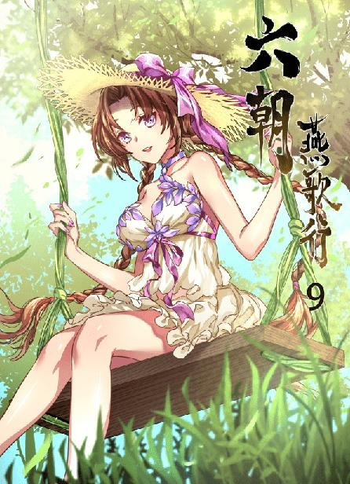
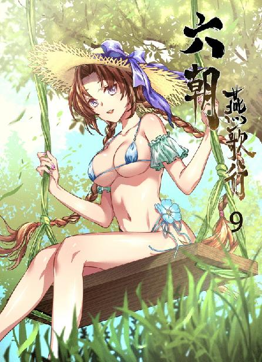

第79集·浮屠金身
唐国篇（3）
出版日期：2019-08-09
【本集内容简介】
曲江池畔的紫云楼高朋满座，诸位显贵公子自述出身，比较门第，好不热闹。楼上却掉下来一位李姓王爷，拉住程宗扬，就要去见杨玉环？
十方丛林借助宦官势力吞并摩尼教，又将程宗扬列为佛门公敌。不知不觉中，长安城已经阴云密布。
廖群玉求见杨玉环，却拿出一件百衲婴衣，老廖这是……发了什么疯？
※ ※ ※ ※ ※

封面人物：小紫

封面人物：小紫（内衣版）
曲江池中多芙蓉，御苑也因此而得名。相比于城中的街道，通往曲江芙蓉园的道路显得简陋了许多——当然是以唐国的标准而言。
路面没有铺设砖石，就是黄土路。不过却是黄土过筛，掺上石灰，用石碾压平夯实，再堆放大量柴草，点燃焚烧，将整个路面全部烧制一遍的黄土路。
经过如此处理之后，宽及两丈的路面不仅平整坚实，而且能有效避免杂草生长，破坏路面的完整性。方法是很好，但这样的黄土路铺设下来，人力物力的耗费可想而知。难怪石胖子在唐国的水泥生意做得风生水起。
此时三名鲜衣怒马的公子哥儿，带着五六只鹘鹰，七八条猎犬，十几个张牙舞爪的随从，架鹰唆犬，呼啸而过。那些坐骑还钉了蹄铁，再结实的黄土路面也经不住如此践踏，一蹄下去就踏出一个浅坑，砂土飞溅，引得路人纷纷侧目。
那三位恍若不觉，或者说压根儿不在乎，一路谈笑风生，旁若无人。
一名锦帽貂裘的公子哥儿左右张望，“人呢？不是说在曲江聚会，都在哪儿囚着呢？”
为首的公子道：“紫云楼。”
“紫云楼？谁这么大的面子？”
“王家哥哥托到太真公主门下，借用一天，这面子够大吧？”
“喔——”两人齐齐应了一声。
程宗扬在旁听得仔细，当即策马上前，笑道：“三位兄弟也是来聚会的？”
三人看他也是锦衣华服的打扮，只是面生得紧，迟疑道：“阁下是……”
程宗扬笑道：“我也是赴王家哥哥的约，正好顺路。”
三人恍然，“原来如此。”
“在下姓程，不知三位贵姓？”
“我姓韦名达，族中排行十七。”为首的公子哥儿说着，露出艳羡的目光，“程兄，你这坐骑哪里来的？”
虽然彼此素不相识，但这帮公子哥儿起码的眼力都是有的。这位自称姓程的年轻人自带有一番上位者的气度，胯下那匹通体赤红的坐骑更是身高腿健，神骏无比，比三人的坐骑都高出一头。
这些公子哥儿平常讲究的就是声色犬马，一匹名马不仅彰显身家财力，同时也代表了在圈子中的身份地位。程宗扬骑着这样的名驹，可见身家不凡，顿时被三位公子哥儿引为同道中人。
程宗扬顺势加入队伍，一边笑道：“我在汉国有处马场，惯产良驹，三位兄弟有兴趣，回头我让人带几匹来。”
三人大喜过望，“那可多谢了！”
韦达道：“程兄在汉国有马场？”
“几块荒地，用来养些马匹、牛羊罢了……”
程宗扬随口说了自己在首阳山下的牧场，那三人不疑有他，彼此间越说越是投契，不多时便称兄道弟，引为知己，谈笑着往紫云楼行去。
程宗扬本来想入苑之后打听杨玉环的去处，这会儿倒是省事，有这三位在，连问路带找人全都有了。
三位公子哥儿全无戒心，说笑间程宗扬打听出原委。那位所谓的王家哥哥是宰相王涯的孙子王显，出身名门，又性喜交游，为人豪爽大度，在长安一众豪门公子间颇有名声。每逢年节，他都会在曲江呼朋唤友，欢宴聚会，这回更是借来皇室御用的紫云楼——不用说，来年声望必定更上层楼。
四人并辔南行，不多时便来到芙蓉园。
芙蓉园临池而建，园中重门叠户，檐牙高啄，气势不逊于汉宫，精巧之处犹有过之，尽显大唐皇室的气派。
虽然芙蓉园年节开放，允许百姓出入，但宫室殿阁也不是谁想进就能进的。尤其紧邻曲江池的紫云楼，地势高瞻，殿宇华丽，隔水望之，犹如神仙宫殿，被称为芙蓉园第一胜景，寻常百姓更是连边都摸不到，只能远观而已。
紫云楼高十二丈，楼分四层，玉楼重檐，金碧辉煌。临池一侧设有观景的扶栏平台，在楼内便可俯览曲江胜景。此时楼前的广场上聚满了车马，还有数以百计的豪奴与门客。
那匹赤兔马帮了程宗扬大忙，论逼格，远超后世的布加迪威龙。混迹于一众世家公子之中，根本没人怀疑他的身份，反而不少人都与韦达一样，投来艳羡的目光。
袁天罡等人被当作门客，拦在楼下，程宗扬与韦达等人上到宴客的二楼。
作为东道主的王显年纪二十五六，身材不算高，腿短身长，颇为特异。他此时正在殿门处迎客，频频抱拳拱手，不时爆发出一阵大笑。程宗扬上来时，虽然素未谋面，他也十分热情，果真是个好客的性子。
此时殿中已经聚了数十人，尽是锦衣少年，还有几个年纪轻轻便穿青服绿，已经有官职在身。他们三五成群聚在一处谈笑喧哗，或是凭栏笑语，豪气干云。
韦达等人自有好友在此，程宗扬寻了个借口，自己在殿内转了一圈，没见到杨玉环，倒是见到了几名身份不凡的贵女。让他讶异的是，其中有一半是男装打扮。只不过她们戴的耳环都没取下，显然这些男装并非为了掩饰身份，纯粹就是为了起居方便。
换作别处，女扮男装出现在公众场合，肯定少不了惹人非议。可在唐国，在场的一众公子们都习以为常，丝毫不觉奇怪，倒是有几个赶去献殷勤，结果被骂了一通，灰溜溜地回来，引起一片笑声。
王显带来的奴仆在殿中摆好筵席，按照赴宴的人数，每人一张漆几，一条锦席，几上摆着匕、箸、杯、觥，器具雅洁精致。
程宗扬一眼扫过，殿中已经摆了三十余席，奴仆们还不断搬出漆几。最上首放着两席，左侧一席是东道主的席位，右侧则是主宾的位置。
天色将晚，人也来得差不多了。王显走到殿中，扬声道：“诸位兄弟！本来早该与兄弟们聚会，只是前几日兄弟我去终南射猎，耽搁到今天。兄弟先向各位谢罪了！”说着抱拳作了个罗圈揖。
一众公子纷纷道：“王家哥哥说的哪里话！”
王显笑道：“闲话少叙，难得我等兄弟在此相聚，今晚不醉无归！”
众人轰然应诺，气氛热烈。
王显远远作揖，扬声笑道：“永兴公主，请上坐！”
“不去。”一名穿着道服的女子摆了摆手，豪爽地说道：“你们玩你们的，我们姐妹自己开席。”
“也罢。”王显笑道：“我们这些凡人不敢冲撞仙子。来人啊，给公主另设一席。”
几名贵女结伴去了偏殿，王显又力邀一名穿着深绿色六品官服的公子入座首席，那公子力辞不可。双方有帮腔的、推让的，一时间拉扯不下。
一名少年拾级而上，听得里面吵嚷，走到程宗扬身边道：“干什么呢？这么热闹？”
程宗扬回头看了一眼，只见那少年乌衣箭袖，目带英气，只不过衣服上沾满灰土，像是不小心从马上跌下来，滚得灰头土脸。
程宗扬笑道：“推让首席呢。”
那少年哂道：“有什么好推的？我坐不就行了？”
他没有压低声音，就那么毫无顾忌地说出来，顿时惹来不少目光。
旁边一名身材壮硕的公子哥儿哼了一声，面露不屑。
那少年也不客气，“哼什么哼？难道我坐不得？”
那公子哥儿勃然大怒，当场就要动手，顾忌到此地乃是长安，只狠狠盯了他一眼。左右到底咽不下这口气，那公子哥儿踏前一步，开口说道：“王家哥哥何必争执？以我之见，大伙儿都是王家哥哥出面召集，才来这紫云楼，说来不少人还不认识。不如让大伙儿自述门族官职，一来公推一位上座；二来，也免得某些奸滑之徒，鱼目混珠！”
此言一出，殿中众人纷纷应是。
王显对那位绿衣少年道：“李兄，你看如何？”
绿衣少年略显无奈地摇了摇头，然后彬彬有礼地抬手说道：“王兄先请。”
“那好，我先来！”王显大方地说道：“我姓王名显，大伙都认识吧？”
殿中发出一片哄笑。王显身为东道主，若是连他都不认识，那可真是混进来的。
王显朗声道：“某出自太原王氏，祖父代国公、宰相，讳涯；父工部郎中、集贤殿学士，讳孟坚。李兄，请。”
绿衣少年细声细气地说道：“祖凉国公、宰相、尚书右仆射，讳逢吉；父翰林学士、同平章事，讳训；某大理寺司直，李植。”
殿内传来一阵低语，怪不得他年纪轻轻就有六品官身，原来出自陇西李氏。祖父李逢吉是前任宰相，父亲李训是现任宰相，父祖两代宰相，到他这一代，单是荫职也足够了。
唐国与晋国一样，极重门第，士族中最受推崇的便是五姓七家：太原王氏、陇西李氏、赵郡李氏、博陵崔氏、清河崔氏、范阳卢氏和荥阳郑氏。
太宗曾经专门修订过《氏族志》，收录唐国士族二百九十三姓，一千六百五十一家，结果出自陇西李氏的唐国皇室居然排到了一个黄门侍郎的后面——就因为那个黄门侍郎出身于博陵崔氏。太宗一怒之下，硬将博陵崔氏改为第三等，可天下仍然公认博陵崔氏为士族之冠。
接下来殿内众人纷纷开口，各家的姓氏名讳一时间也记不了许多，不过程宗扬听着，除了刚开始的王李两位，并没有其他五姓七家的子弟。这也不意外，以五姓七家的家风，跟这些纨绔也玩不到一起。王显算是另类，又因与李植交好，才硬把他拉来。但即便没有顶级士族，在场众人的家世也颇为显赫，国公、宰相一大堆，最不济也是个节度使。
等轮到方才首倡其议的公子，他傲然说道：“祖父工部尚书，讳少寂；父魏博节度使，开府仪同三司，讳彦祯；某家六州都指挥使，乐从训！”
此言一出，在场的众公子不禁动容。魏博号称唐国第一强镇，精兵辈出，人称“长安天子，魏博牙兵”。魏博下辖六州，乐从训的六州都指挥使，虽然官职在朝廷中并不显赫，但手中的实力只怕仅次于神策军。
王显笑道：“乐兄弟！这边来坐。”
乐从训带着一丝嘲讽道：“不急，这里还有两位呢。”
王显定睛看去，不禁愣了一下。
这会儿众人都已说完，只剩下程宗扬和他旁边那个一身灰土的乌衣少年。
两人对视一眼，乌衣少年道：“你先来？”
程宗扬笑道：“还是你先吧。”
“行！我先。”
乌衣少年当着众人的面，昂然走到东道主席前，顺手拿起酒觥，仰起首，如长鲸吸水般，一口气喝完。
看着他狂狷的作派，殿中众人神态各异，有的鄙视，有的恼怒，还有的一副看笑话的表情。只有王显和李植面露苦笑，各自逊让了一步。
乌衣少年抬起袖子抹了抹嘴，开口道：“曾祖宪宗皇帝；祖穆宗皇帝；父敬宗皇帝；兄当今皇帝；某江王，李炎。”
一番话说完，殿中鸦雀无声。
片刻后，王显带头跪下，“拜见江王殿下。”
自李植以下，包括刚才看他不顺眼的乐从训，尽皆拜倒在地，口称殿下。
李炎旁若无人地拈起一块点心吃了，又连饮了两觥酒，然后将酒觥一丢，看向殿内唯一没有拜倒的人。
程宗扬摸了摸鼻子，他也不想这么显眼，可他真有些跪不下去。
李炎坐在东道主的席位上，看着孤零零站着的程宗扬，唇角慢慢挑起一丝笑意，然后往旁边的首席一指，“程侯，入座吧。”
程宗扬只好在众人注视下走过去，无奈笑道：“原来你认识我？”
“要是连程侯都认不出来，内坊局那些奴才就该死了。”
李炎说着转过头，“有什么吃的赶紧上——我还饿着呢。”
王显连忙吩咐奴仆奉上酒食，一边招呼众人入座。李炎突然现身，让他又是庆幸又是头痛。庆幸的是李炎身为亲王，此番亲临酒宴，自家的声望自然是水涨船高；头痛的是这位爷也不打个招呼，弄得自己手忙脚乱，本来安排好的座席又得重新排定。
席间酒水菜肴早已备好，王显吩咐下去，转眼便即奉上。
李炎执匕割下一块炙好的驼峰，一边扔到口里大嚼，一边道：“程侯尝尝，这紫驼之峰，最是膏腴！”
程宗扬切了一块，果然浓香柔滑，“味道不错。”
李炎一手执匕，一手持觥，风卷残云般吃喝一通，然后丢下匕箸，扯起丝巾擦了擦手，“欲穷千里目，更上一层楼。紫云楼之顶，可远观长安。此时华灯初上，万家灯火，灿若星河。程侯不妨来看看我长安城夜景，比之洛都如何？”
程宗扬道：“你是东道主，你说了算。”
李炎哈哈一笑，起身对王显道：“叨扰！改天我回请。”
王显起身笑道：“不敢。”
李炎朝李植点了点头，没有再理会众人，与程宗扬一道离席，拾级登楼。
等两人离开，殿中才响起一片窃窃私语。众人都在猜测，江王不在十六王宅待着，怎么跑来紫云楼？他口称的那位程侯，又是何方神圣？
乐从训脸上时青时白，拿着食匕，在炙驼上狠狠割下一块。
※ ※ ※ ※ ※
登上顶楼，大片的白玉栏杆簇拥着一间双层飞檐的精阁。一名道人和几名太监守在阁前。那道人年约四旬，留着三绺长髯，头戴玉冠，身上穿着一袭青色的道袍，双目神采湛然，望之如神仙中人。
李炎介绍道：“这位是赵炼师。”
那道人向两人微微稽首，“长青宗，赵归真。”
程宗扬想起在太泉见过的长青宗道人，笑道：“玉魄子玉道长可好？”
赵归真道：“玉师弟云游天下，尚未回返。”
程宗扬怔了一下，“这样啊。”
李炎走到阁前，先挤出一副笑容，然后推开阁门，欢喜地说道：“小姑姑！侄儿把人给你带来了！”
阁内传来一声娇嗔：“别吵！”
李炎比了个噤声的手势，蹑手蹑脚地走进阁内。
只见一个女子正背对着两人，俯着身子，面前是打开的窗户。她穿着一条绛红色的丝绸长裙，裙上绣着金色的凤纹和连理枝。那丝绸是六朝有名的蜀锦，由于用的是柞蚕丝，比寻常的桑蚕丝要重上半分，织成的锦缎质地精巧致密，垂感十足，此时从后看去，正看到臀部近乎完美的轮廓，曲线饱满诱人。
忽然她肩头耸动着，“咯咯”笑了起来，“那两个在亲嘴呢……一对傻瓜，以为躲在树后面就没人能看见了？”
李炎捂着嘴，用力咳了两声。
“咳什么咳？喉咙里长毛了？”那美女头也不回地说道：“说了别吵！哎哟哎哟，又亲上了……哈！上手了，上手了！”
程宗扬这才注意到，她面前的窗户上放着一架银白色的单筒望远镜，筒身长近四尺，口径足有半尺，上面布满各种旋钮和竖置的广角目镜——这是一架即便放在现代也价格不菲的天文望远镜，用来观星的专业设备，她居然拿来搞偷窥？
“快看！快看！手都伸到衣服里面了哎！”那美女津津有味地说道：“太流氓了！”
“咳！咳！咳咳！”后面的亲王殿下捂着胸口，肺都快咳出来了。
“你肺里长鸡毛了！”美女被他扫了兴致，火冒三丈地转过身，这才发现阁中多了一个陌生人。
几乎一瞬间，那美女脸上的气恼就消失不见，取而代之的是一副矜持而又庄重的凛然之态。
“他是谁？”
李炎捂着胸口，无力地说道：“姑……还是你把我踹下去的。”
“哦。”那美女想了起来，“原来是程侯。”
看着她的面孔，程宗扬禁不住屏住呼吸。
那是一张令人惊艳的面孔，如果说赵飞燕的美貌是柔婉得令人心醉，面前这张面孔美得简直有种杀气。
那是一种冲击力十足的美，一眼看去，各种美貌绝伦、明艳不可方物、瑰姿艳逸、鲜妍明媚、国色天香、倾国倾城、风情万种、姣艳无匹、姿容绝世……之类的形容词，就跟瀑布一样直冲下来，活生生泼了自己一脸。
她乌亮的长发盘成鬟髻，髻上插着一支金步摇，雪白的额上贴着一朵鲜红的梅花钿，肌肤白里透红，粉腻如脂，一双杏眼明眸善睐，顾盼间艳光照人。
程宗扬忽然有种念头，想找出那张饕餮面具，戴在她脸上——这样美丽的面孔，只让自己一个人看就够了，凭什么让别人看！
“你，”杨玉环打量着程宗扬，一边对李炎道：“去把那对野鸳鸯打散。”
“啊？”
杨玉环说道：“今天是腊月二十八，过年期间，长安城不许耍流氓——就说是你哥哥说的。”
李炎憋了半晌，脸都快憋紫了，终于憋出一句：“不合适吧？”
“怎么不合适了？世风日下，人心不古，他这个当皇帝的早就该整治了！”杨玉环警告道：“你要敢说是我说的，小心我把你腿打断！”
李炎认命地答应下来。
他刚要离开，杨玉环又叫住他，指着窗户道：“从这儿下去！再磨蹭，他们就该完事了。快点儿！”
李炎只好爬到窗户边，飞身跃到檐上，几个起落，从紫云楼掠下，依着小姑姑的吩咐去棒打鸳鸯。
杨玉环微微一笑，矜持地说道：“几个侄儿不懂事，让程侯见笑了。”
这话是把唐国的皇帝陛下也捎进去了？程宗扬都没法儿接口。他这会儿才知道李炎身为亲王，怎么会弄得灰头土脸——合着是被杨玉环从楼上踹下去的。
堂堂亲王，她说踹就踹，还当着自己的面，给唐国的皇帝陛下栽赃，程宗扬觉得自己最好还是不要招惹她。
杨玉环抱着手臂，饶有兴致地围着他转了一圈。
杨玉环打量着他，他也在打量着杨妞儿。令人惊艳的不仅是她的容貌，还有同样傲人的身材。杨玉环个子高挑，身高比自己还高一点儿，程宗扬估计她得有一米七九——减去一厘米，免得不好嫁人。至于身材，更是丰姿秾艳，柔润得荡人心魄，尤其是胸前那对……
有过上次偶遇的经历，程宗扬目光不由自主地往下滑去，一对丰挺的乳峰映入眼中。也许是距离更近的缘故，感觉比上次见到时还要大，浑圆高耸，尺寸惊人，简直能撑爆人的眼球。随着她的步子，那对豪乳微微晃动着，冲击力十足。
“看起来也不比旁人多个鼻子。”
杨玉环停下脚步，然后坐在沙发上——没错，程宗扬这会儿才看到阁中摆着一张沙发。上面铺着一块白狐般的兽皮，雪亮的绒毛长约寸许，柔滑异常，但比狐狸大得多，不知道是何种异兽。
沙发前的圆桌上放着一只高脚玻璃杯，里面盛着殷红的葡萄酒。杨玉环伸出兰花般又白又柔的玉指，捻着杯足晃了晃，浅浅饮了一口，然后屈指一弹，打出一道禁音符。
杨美女两腿交叠，舒适地靠在沙发上，等禁音符生效，才开口说道：“你，找我有什么事？”
程宗扬摸了摸鼻子，苦笑道：“这卫公……嘴巴够快的。”
“废话。在长安城里头混，不跟皇图天策府搞好关系，实现情报共享，打架都找不来帮手。”
“那你已经知道我的身份了？”
“什么身份？”杨玉环矢口否认，“不知道！”
“卫公没跟你说？”
杨玉环哂道：“那糟老头儿说的话也能信？”
“你的意思是，卫公说了不算？”
“不算！”
“岳帅的书信呢？”
程宗扬说出岳帅的时候，一直在盯着杨玉环的眼神。杨美女目光淡定，丝毫不显迟疑，显然对他的来意了如指掌。
“拜托，大家都是成年人了，你觉得一封书信能当证据吗？先不说伪造书信是六朝黑市的支柱产业，经久不衰，技法推陈出新；就算是真的，谁知道会不会是偷来的抢来的骗来的捡来的？”
程宗扬摊开手，“那你说怎么才能相信呢？”
杨美女优雅地啜了口葡萄酒，笑吟吟道：“不如你先说说——你跟潘姐儿什么关系啊？”
“我们就是一面之交，没什么关系。”
“我信你个鬼。潘姐儿当晚回去，就闭关修炼。她突破没多久，境界还没稳固就着急晋阶……”
杨玉环微微侧着身，右臂支着沙发的扶手，把酒杯举到耳边，那双杏眼露出好奇的神色，“我就奇怪，她有多想打死你？”
“猜错了。”程宗扬果断反口，“我们有一腿。”
“你以为我会信？人家的守宫砂还在呢。”杨玉环揶揄道：“你不会想告诉我，你那一腿放错地方了吧？”
这杨美女真够荤素不忌的，还说长安城不许耍流氓，敢情整个长安城的流氓都让她一个人给耍了？
程宗扬不打算再跟她兜圈子，“你知道我的来意，对不对？”
杨玉环看着他，像是下定决心一样，举起酒杯一饮而尽，然后放下酒杯，伸出舌尖舔了舔唇角的酒渍，抬起手腕。
衣袖滑下，露出一截雪藕般的手臂，一股异香扑鼻而来。她肌肤白腻莹润，细如脂玉，但最引人注目的，还是她腕上一条银亮的金属环。
杨玉环晃了晃手腕，“这是什么？”
程宗扬满脸的一言难尽。岳鸟人到底带了多少假表？怎么见人就送？他不当表贩子，实在是委屈了他这块材料！
程宗扬无声地叹了口气，“手表。”
“做什么用的？”
“看时间的。比日晷、铜漏之类的更精确。”
“怎么看？”
“看到上面的指针没有？短的是时针，中等的是分针，最长那根是秒针。”
“它为什么不会动了？”
“这是石英表，电耗完就没用了。”
“哦。”杨玉环点了点头，然后把表摘下来递给他，“让它接着动。”
“……你以为我会发电？”
“不能吗？”
程宗扬用力摇了摇头，“不可能！”
杨玉环嗤笑一声，一副“果然揭穿你了”的表情。
程宗扬耐着性子解释道：“这就是一块不值钱的假表，要是机械表还能用，石英表没电就用不成了——电你知道吧？”
“知道啊。”杨玉环懒洋洋道：“雷电、闪电……”
“不是那种的，它里面装的是电池。”
“不一样吗？”
“性质是一样的，都是电。不过雷电是自然现象，电池是人造的。”程宗扬比划着说道：“一颗很小的东西，里面有电，用来驱动表针转动。”
杨玉环眨了眨眼睛，那双水汪汪的杏眼宛如放电一样，让人身上发麻。她用甜腻的声音柔柔道：“你是说，那么小的‘电池’里面有电？还跟天上的雷电是一种东西？”
“对！”
“骗鬼呢！”杨玉环拍案而起，嗔道：“你给我抓个闪电塞进去看看！”
程宗扬怔了一下才反应过来，这就是个文盲啊，起码的科学常识都没有！
“去抓啊！你要本事把闪电抓下来，我就信了你的邪！我见过的骗子多了，还没见过你吹的这么精奇的。”
杨玉环双手叉腰，一脸鄙视地说道：“抓闪电？你干脆说雷公电母都被你抓住，塞到这里面好了。接着编啊，我看你还能编出什么来！”
被杨玉环劈头盖脸地一顿痛斥，程宗扬发现自己居然没生气——实在是眼前这妞长得太美了，一颦一笑都美艳绝伦，就像恃美行凶一样，让人怒不起来，眼睛里只剩下惊艳了。
“嗒”的一声轻响。
杨玉环的痛斥戛然而止。
“嗒。”
房间里暗了下去。
“嗒。”
一道光柱射出，光度完全压过烛光，整个房间都亮了起来。
“嗒。”
“嗒。”
“嗒……”
光柱一明一灭，那张明艳的玉容在明暗交替间不断变幻。时而灿然生辉，时而幽艳迷人。
“手电筒。”
程宗扬握着一根筒状物体晃了晃，然后对准窗外。
一道雪亮的光柱从他手中亮起，向着无垠的夜空笔直射出，仿佛越过无限的距离，一直射到夜空深处。
※ ※ ※ ※ ※
“哇！这么亮！”
“哈哈，能照这么远！”
“你看！像不像一把剑？天人何在！吃我一剑！杀！杀！”
杨玉环两手握着手电筒，对着夜空又劈又砍，玩得不亦乐乎。
“啊！我受伤了……”
杨玉环惊呼一声，蛾眉颦起，红唇颤抖着，露出令人心碎的痛楚表情。那种凄婉悲艳之态，让程宗扬心头都为之一紧。
再仔细一看，这丫头把手盖在灯筒上，光柱透过手掌，将她的玉手映得如同透明一般，红润剔透。
“好红，好多血……救命……”
程宗扬抚着额头道：“玩够了吧？”
杨玉环把手电筒抱在怀中，喜滋滋道：“给我了。”
杨妞儿胸部本就丰挺伟岸，此时一挤，浑圆的乳球在衣内沉甸甸地颤动着，荡起层层乳波，让程宗扬差点儿看得眼都直了。
他咽了唾沫，“那可不行。”
“小气鬼。”杨玉环翻了个白眼，把手电筒丢还给他。
“这回你该信了吧？”
“想得美！”
程宗扬都快气笑了，“你是打定主意不信是吧？”
杨玉环眨了眨漂亮的大眼睛，“你好像不服气？”
“废话！逗我玩呢？”
“这样吧，”杨玉环大度地说道：“我出三道题。你要能答上来，我就承认你的身份。”
“什么题？”程宗扬戒备地说道。这妞不是个善茬，可得小心别被她坑了。
“第一道是问答题，我问你答。”
“可以不回答吗？”
“可以啊。不回答就算你输了。”
“行，你问吧。”
杨玉环抿了抿唇角，抛出第一个问题：“你家娘子长得美吗？”
程宗扬第一个反应是：哪位啊？自家娘子多了去了！然后才意识到她问的是云如瑶。情报共享啊，卫公知道的，她都知道。自己的底细对她而言，恐怕没有多少能称得上秘密。
“当然！美如天仙！”
“哎呦，很有信心嘛。”杨玉环紧接着问道：“你能满足她吗？”
程宗扬一阵火大，“这是什么鸟问题！”
“那我换个问题好了，”杨玉环从善如流，当即换了种问法，“她能满足你吗？”
看着那美妞满眼好奇的目光，程宗扬慢慢伸出手，摸了摸鼻子。
“我可以回答你，但我回答完之后，你必须回答我一个问题。”
“很公平！”杨玉环毫不迟疑地答应下来。
“我有三位正妻，两个暂时还没过门。另外有一媵一妾，差不多一二十个侍姬——我一个人全能摆平。”
“这么厉害？”杨玉环上下打量着他，“吹的吧？”
“该我问了。我作为岳帅的继承者，有资格继承他的遗物，如果你确认我的身份无误，就应该把他的遗物交给我。那么，我的问题是……”
程宗扬停顿了一下，盯着她的眼睛，缓缓道：“他的遗物除了你之外，还有什么？”
阁内一片寂静，杨玉环娇艳欲滴的红唇紧紧抿起，方才的笑谑无禁和放浪形骸潮水般退去，露出礁石般的冷静和固执。
程宗扬面色如常，心底越发笃定。
岳鸟人活着的时候乱七八糟，树敌无数，死得更是极端不负责任，连句话都没留下来，就活不见人，死不见尸，剩下好大一个烂摊子，让自己这个后来者没头苍蝇般乱撞。
自己来见杨玉环，心里一点底都没有。鬼知道岳鸟人留了什么遗物，杨玉环是不是真和他有什么关系。
杨美女从看到自己的第一眼开始，气氛就有些古怪。她主动把李炎赶来找自己，可见面之后，却似乎对自己有种莫名的敌意和抗拒。更让人怀疑的是，她对于自己与其他女人的关系，有着异乎寻常的兴趣。
刚开始问潘姐儿和自己的关系，还可以说是女人天生八卦。接着追问云如瑶长得美不美，自己和老婆的性生活是不是和谐——她要是天生就这么八卦，根本就长不了这么大，小时候就该被人活活打死了。
自己的性生活干她屁事！程宗扬当时就想爆粗口，可转念一想——莫非真跟她有关系，她才忍不住要打听呢？
就在那一刻，程宗扬突然萌生出一个大胆的想法：她想见自己，又抗拒见到自己。她围着自己打量，对自己长什么样子充满好奇，又一个劲儿地打听自己的感情史，问自己跟谁有一腿——这是相亲呢？
他并不知道岳鹏举在长安留了什么遗物，甚至连有没有也不知道。但从卫公的态度，还有杨玉环的反应判断，显然留了些什么。而岳鹏举和杨玉环的关系，也许比想象中更深，也更密切。
程宗扬决定赌一把，从她的表情看，自己似乎赌对了。
良久，杨玉环轻启朱唇，“等你赢了，我会告诉你。”
程宗扬抬了抬手，“该你问了。”
“没有了。”杨玉环冷着脸道：“突然不想问了。”
“那就是说，我赢了？”
杨玉环白了他一眼，“三道呢。第二道……”
程宗扬打断她，“不是第三道了吗？”
“我说了，第一道是问答题。”杨玉环不耐烦地说道：“刚才问的全都是第一道题。”
好大一个坑……你这不是三道题，是三份试卷吧？要不是她坏了兴致，不一定要玩到什么时候呢。
“行，你说了算。”程宗扬自己找了张椅子坐下，“继续。”
“第二道是辨物题……”
“不是辨认过了吗？哦，手表那个不算。”
“你知道就好。”
“要辨认什么东西？”
杨玉环挑起唇角，“你不是想知道他留下了什么吗？”
真的留有东西？程宗扬心里第一个念头是：要不要先找到死丫头再来看？
杨玉环从沙发后面拿出一个暗黑色的物体，“呯”地放在圆几上。
“这是什么？”
那个物体四四方方，长三尺，宽两尺，厚约一尺。表面光滑如镜，几乎能映出人影，犹如一件精美的艺术品，通体看不到任何缝隙，就像一整块切削好的金属块一般，浑然一体。只不过它正面装有提手，提手下方还有一只表盘——这形制看起来就眼熟多了。
程宗扬道：“密码箱？”
“打开它。”
“密码呢？”
“没有。”
“岳帅给你留个密码箱，没给你密码？”
杨玉环眼也不眨地说道：“忘了。”
程宗扬试着叩了叩物体的表面，指下传来微弱的闷响。以自己现在的修为，一般的金属制品，用暴力强行打开也不是难事。可这只密码箱明显是一件现代物品，而且制作工艺远远比自己所见过的更先进，表面连道缝都没有，用蛮力就不必想了。不过它的质地给自己一种奇怪的熟悉感，好像在哪儿见过？
会不会是钛锰合金？表面渗过碳，或者添加有钨，导致表面变成暗黑色？如果珊瑚匕首在身边，说不定还可以尝试一下暴力破解，可惜匕首给了死丫头带着防身……
程宗扬忽然一怔，想起那种熟悉感因何而来——珊瑚铁！这只金属箱通体全部由珊瑚铁制成！
自己以前见过的珊瑚铁都是自然形态，因为六朝压根儿没有冶炼珊瑚铁的能力。而眼前这只金属箱则是珊瑚铁的制成品形态。难道珊瑚铁本身是现代复合金属的产物，而六朝的珊瑚铁其实是遗落在海底的废弃物？
程宗扬压下心底的震惊，看向密码盘。密码盘是一排竖置的齿轮，上面镌刻的是自己熟悉的数字，只不过这会儿是打乱状态。
一般的密码箱通常是三位数，用穷举法也就是一千次，全试一遍也用不了多长时间。可当程宗扬数清密码盘的位数之后，犹如被人兜头浇了一盆凉水——这只密码箱居然是他娘的八位数！这要是用穷举法暴力破解，拨到天荒地老也拨不完。
程宗扬试着拨了几下，果然没那么好运，直接撞上亿分之一的机率，只好无奈放弃。
杨玉环一脸的幸灾乐祸，“打不开吧？”
“你就不好奇这里面装的什么吗？还瞎乐呢。”程宗扬道：“这一题我过关了啊。”
杨玉环蛾眉扬起，“凭什么过关？”
“你只说了辨认，我已经认出来这是密码箱了。”程宗扬理直气壮地说道：“你又没说必须要打开。”
“你——”
“你要是能提供线索，说不定我有办法打开。不然你就慢慢拨着玩吧。”程宗扬安慰道：“打不开其实不是坏事。以我对岳鸟……帅人性的深入了解，这里面指不定装的什么呢。”
这么精密的保险箱，你说岳鸟人在里面装的剩饭我都信！
杨玉环哼了一声，把那只金属物体收起来，丢到沙发后面。
程宗扬伸头一看，沙发后面扔了一堆乱七八糟的东西，一个个怪模怪样。这只密码箱还算好的，其他有的带着残缺的齿轮，有的装着折断的连杆，还有一件庞然大物，怎么看都像一个发动机……
“你这是从哪儿弄的？”
“本公主历年搜集的各种异物。”
“异物？”
“各种来历不明、制作奇特的物品。”
“我还以为你打劫了哪个垃圾堆呢。”
程宗扬说着，忽然视线一凝，盯住其中一件物品。
“这个？”杨玉环从那堆物品底下翻出来一件，“这东西做得挺精巧，可一点用都没有。当锤子吧，前面短了一截。当凿子吧，下面又是平的。看起来有点儿像指虎，可怎么都不好使，沉得压手。倒是砸核桃还行。”
杨玉环说着，真找出一把核桃，握着那个东西，“呯”地砸开一颗。
看着她豪迈的动作，程宗扬心脏差点儿从喉咙里跳出来，“停！”
杨玉环“呯！呯！呯！”一连砸了三颗，才冷哼一声，“你说停就停，那我多没面子？”
程宗扬捂着胸口，半晌才道：“你保险都没关……”
“什么保险？”
“别再动了！慢慢放到桌子上……枪口别对着我！”
“梆”的一声，那支大口径手枪被直接扔到桌上。
程宗扬一把抢起枪，先关掉保险，然后检查了一下。他并不是没有玩过枪，但这支枪跟他见过的都不太一样。结构相似，不过口径极大，尺寸和份量都比一般的枪支要大得多。
“这是什么东西？”
“手枪。”
“做什么用的？”
“一种杀人的武器。”
“杀人？抡起来砸吗？”
程宗扬抽出弹匣，发现里面没有装子弹，才松了口气，但接着又觉得不对，“子弹呢？”
“什么子弹？”
“大概有半指长的圆柱体，金属外壳，顶部通常是尖的或者圆的。”
“没见过！”
干！好不容易见到把枪，居然没子弹？没子弹的枪有个屁用，砸核桃都嫌不趁手。
程宗扬还不甘心，“这些东西你从哪儿收集的？”
“捡的，买的，别人送的，还有侄儿们孝敬的。”
行了，知道你侄儿们很牛逼，大唐皇帝呢。有点好东西，八成都被你给搜刮走了。
“知道它是从哪儿来的吗？”
“这谁知道？到我手里，鬼知道已经过了多少手了。不过这东西挺结实的，上一家拿它弯通条，听说还挺方便。”
弯通条？拿枪管来弯通条？得，这下找到子弹也没法儿使了，里面的膛线都不知道磨成什么样了，开枪八成要炸膛……
程宗扬把那只手枪往破烂堆里一丢，“第二题考完了吧？”
杨玉环讶道：“我出题了吗？”
“……”程宗扬一脸呆滞。
杨玉环理直气壮地说道：“我都没问，你自己说的。怎么？想耍赖啊！”
行，你长得美，你说的对。
“还有什么题？快点！”
杨玉环起身走到窗边，“第二道的第二题——这是什么？”
“天文望远镜。”
“会用吗？”
这个自己还真会用。程宗扬卷起衣袖，先把镜头调高，从暗戳戳对着池边的小树林，调到对准东边天顶的角度。
他一边对着目镜调动旋钮，一边道：“今晚没月亮，只能观星了。随便找一颗近的……好了。”
程宗扬话音刚落，一股香风便扑面而来。杨美女不等他让开位置，就把他推到一边，凑到目镜上，随即发出一声惊呼，“这么清楚？！好大的星星哎！上面是什么……红斑？真的是红斑！它还在转！”
“不会吧？你还能看出来它在转？”
“老娘视力一流！”杨美女头也不抬地吹了一句，又沉浸在自家收藏品的新玩法里，“好多漂亮的条纹……这是什么星？”
不等他回答，杨玉环抬起头，飞快地看了一眼，惊呼道：“岁星！居然是岁星！原来岁星长这个样子啊！”
身边的美女不断发出惊呼，丝毫没有留意自己与那个男人离得有多近。姣洁如玉的面颊，修长柔美的玉颈，丰腴而又白腻的肌肤，仿佛散发出一丝奇异而香馥的气息，呼吸间香气逼人，令人禁不住心猿意马……
杨美女意犹未尽地抬起头，“原来能看这么远……这个干什么用的？”她指着目镜旁边一个小巧的支架问道。
“应该是放手机的。”
“手机？”
“……这个解释起来就太长了。”
“那就短点说。”
“你可以这么想象一下：有一个东西，把日晷、影月宗的传讯术、笏板、算盘、钱包、照像机、录音机……全部放在一起，这就是手机了。”
杨玉环只回答了三个字：“真能吹！”
“手表、手枪、手机、手电筒……这名字编的，又随意又省心哈。”杨美女讽刺道：“编瞎话都不用心。”
程宗扬感觉好像被人打到七寸。这么一想，现代人起名还真是不走心，怎么省事怎么来，尽跟“手”干上了。
“还有什么题目，赶紧出。”
“出什么出？我要观星。忙着呢。别这么看着我，我又没说一次考完。剩下的改天再说。”
“改日了？意思是，我们日后再说？”
“行啊，等你能日到我再说吧。”杨玉环撤去禁音符，娇声唤道：“来人！送客！”
一名太监闻声进来，他戴着貂蝉冠，怀中抱着一柄拂尘，那张浮肿一样惨白的脸上，挤出一个恐怖的笑容，血红的嘴唇就跟刚喝过血一样。
又是一个死变态……
程宗扬不禁想起远在临安的秦翰、郭槐等人。同样是太监，汉、唐、晋净出变态了，相比之下，宋国的太监真不知道好到哪儿去了，倒是大臣变态的不少。
那死太监对房间里发生的事没有流露出半分好奇，客气地赔着笑脸道：“侯爷，这边请。”
出了阁门，那位赵归真赵炼师在门旁的蒲团上盘膝趺坐，身边浮着一颗鸡蛋大的青色珠子，围着他缓缓转动，珠体散发出青蒙蒙的微光。
见程宗扬出来，赵归真微微一笑，那颗珠子倏忽没入胸口。程宗扬回了一个笑容，却不禁想起太乙真宗。唐国佛门势力固然强大，道门势力也不小，不知道他们派来的是哪位。
紫云楼顶四周围着白玉栏杆，视野开阔无比。程宗扬一眼望去，看到檐角蹲着一个人。
程宗扬走过去，“你不是赶那对野鸳鸯去了吗？”
“嘘……别让里面听见。”李炎压低声音道：“太缺德了，会被雷劈的。”
“胆子不小啊，连你姑姑的话也敢不听。”
程宗扬翻过栏杆，顺着琉璃瓦滑到檐角，“看什么呢？”
“长安城。”
程宗扬抬眼望去，只见脚下的曲江池波光如镜，水面倒映着一座金碧辉煌的紫云楼。再往北，是长安城的万家灯火。
夜色下的长安城，比白天看起来还要清晰与鲜明。数以万计的灯火勾勒出长安城整齐的市坊与街道，宛如一副纵横分明的棋盘。坊中楼阁林立，还有许多佛塔点缀其中，尤其是那座大雁塔，离曲江池只有两坊之地。塔上的长明灯昼夜不熄，宛如一座灯塔矗立在长安城边缘。
六朝建筑的规模比自己想象中都大得多，这座大雁塔也不例外。十层的塔身高近三十丈，四方的塔角挑着铜铃，夜风中轻轻摇曳，仿佛能听到铃声的轻响。
程宗扬禁不住赞叹道：“好宏伟的佛塔。”
李炎哼了一声，双手抱在脑后，仰身躺在瓦脊上，“哪天我非把这些混账寺庙都给拆了不可。”
※ ※ ※ ※ ※
晋昌坊，大慈恩寺，大雁塔十层。
四面的塔门前，各坐着一对僧人。他们穿着黑色的僧衣，光头上点着“卐”字形的香疤。此时众僧双手合什，眼观鼻，鼻观心，口中念诵经文：“无上诸天深敬叹，大地重念普安和，人元真性蒙依止，三才慈父耶和华……”
另外一名僧人双手合什，绕着佛塔漫步。等僧人们念诵到这一句，他用右手在胸前画了个“卐”字，扬声道：“赞美你，天上的慈父。”
众僧念诵道：“一切善众至诚礼；一切慧性称赞歌；一切含真尽归仰；蒙圣慈光救离魔。难寻无及正真常，慈父、明子、净风王……”
那僧人虔诚地伏身拜倒，“赞美你，圣父、圣子和圣灵！”
与后世不同，此时大雁塔的楼梯设在塔外，除了坐在门外的八名僧人，一名绕塔的巡行僧人，还有一名僧人坐在楼梯中间，算下来一共十名。下面一层，同样是十名僧人。再往下，还是十名。但从第七层往下，就不再有僧人看守。
念经声如同一百万只苍蝇一样，飞进塔内嗡嗡作响。
塔内长明的佛灯前，一名穿着黑色丝袍的美妇举起铁制的钵盂，仰首张开檀口，凌空倒下。
钵盂中的清水落入口中，美妇舌尖一转，然后吐出少许。
“无毒。”
塔内供奉着一尊等人大小的坐佛，佛身用一整块碧绿的翠玉雕成，外面的衣物、饰品尽是黄金所制，玉胎金镶，华贵无比。
此时，一名紫衫少女依在佛像膝间，怀中抱着一只白绒绒的小狗，精致的面孔如同宝石一般精致。
“喝了十天的清水，胃里好难受呢。”
那名巡行僧走到门前，开口道：“敝寺奉有斋饭。”
“我要吃肉。”
“佛祖在上，我等僧徒不得杀生食荤。”
“不行呢。我们教派内也有规矩的，信众不许吃素，食素就是破戒。”
巡行僧怒道：“安有此理？”
“只许你们戒荤，就不许我们戒素吗？我们怕素教第一戒就是辟谷。素食不得入口。”
小紫对吕雉道：“记下来。”
吕雉不动声色地应道：“是。”
那僧人怫然道：“哪里有什么怕素教？”
“有啊。刚成立的，我是教主，她是教众。你要是肯弃暗投明，加入本教，我们怕素教就有三个人了。本教第一条宗旨是：我们都不是吃素的！这一条也记下来哦。”
“是。”
巡行僧忍气道：“这位姑娘……”
“叫我教主。”
“这位教……”那僧人刚说了半截，蓦地倏然一惊。自己一直小心戒备，却在不知不觉间中了她的惑心术，此女着实可怕！
他连忙拨动念珠，低声念诵道：“奉佛祖之名，愿佛、法、僧三宝，三位一体，拯救世间所有迷途的羔羊，阿……”
“阿弥陀佛，灯要灭了。”
小紫说着，屈指一弹，玉佛前的长明灯光焰像被人捺住一样，缩小到黄豆大小，眼看就要熄灭。
“佛祖！”那僧人大惊失色，“万万不可！”
“我要吃肉！”
“够了！”窥基大步进来，挥舞着袖子喝道：“尔等擅闯本寺，窃占佛祖金身！我佛慈悲，亦有雷霆手段！如今我大慈恩寺护教法僧尽在于此，管教尔等插翅难飞！”
“大和尚，你好吵哦。早就跟你说了，这佛像是我捡到的。”
窥基咆哮道：“此像在我大雁塔已供奉数百年！”
小紫笑吟吟道：“这塔也是我捡到的。”
窥基额角青筋直蹦，低吼道：“你们闯进本寺，究竟要做什么！”
“我们就是出来玩啊，走啊走啊，捡到一座塔，还有一个佛像。”
“你们怎么进来的？”
“走进来的啊。”
“好好好。从今日开始，不许再送水食。我倒要看看，你们这两个妖孽，能不能再撑十日！”
窥基拂袖而去，远远听到他的咆哮声：“你们这些废物！被人闯进塔内还不知晓！”
“回大师兄，当日我等一直在塔外值守，察觉塔内异动，便即封锁雁塔，里里外外仔细搜索了一遍，可委实没有找到有人闯入的痕迹。她们……她们就像飞进来的……”
“外无异状，必有内鬼！再查！”
“是！”
吕雉没有去碰送来的斋饭，只略微用了些清水，望着外面，淡淡道：“他们今晚必会动手。”
“熬了这么久，这些大和尚的耐性可真好。”
“或许是援手已到。”
小紫摸着佛像的下巴道：“这佛像已死老僧肯定喜欢，八条手臂呢，就算要十万贯，他也不会还价。可惜他是个穷鬼，连十贯都拿不出来。”
吕雉镇定地说道：“我背不动。”
“那就打碎了，慢慢背好了。”
小紫说着，玉指轻弹，佛像一只手中握的金刚杵被弹了出来。卧在她怀中的雪雪伸出脖子，张口将那根镶嵌着八宝的金刚杵吞了进去。
衣袂声响，门外打坐的八名僧人同时起身，眼中露出愤恨的目光。
小紫从佛像下拿起一只拳头大小的铸铁罐子，笑吟吟在手里抛着。
两女闯入塔内的第一天，那些僧人就见识过它的厉害，此物一炸，佛像必难幸免，虽然愤慨，还是无奈坐下。
那尊碧玉佛祖等身像，是唐国皇室供奉在塔内的，若有损坏，谁都担不起责任。尤其目前这位皇帝，对十方丛林的态度一直很暧昧，一旦被抓到把柄，不仅大慈恩寺，甚至整个十方丛林都会受到牵连。
巡行僧净岸合什说道：“阿弥陀佛，女施主且莫逞一时之快。”
“那为什么不放我们走呢？”
“女施主擅闯本寺，总要给个交待。”
“我都已经说了啊。走着走着就走进来了。你瞧，我说了你们又不信，还在塔外面加了个罩子，人家想走也走不了。”
“好教女施主知晓，敝寺在塔上设下十方禁魔阵，各种传讯、遁空的法术尽数禁绝。女施主若想离开，除非一步步走下去。”
“那就不走好了。”
“女施主纵然辟谷有术，难道还能撑过一个月去？何况敝寺若是断绝饮水，不知女施主又能撑上几日？”
“不怕啊。”小紫拍了拍玉佛的肚子，“要是没水喝，我就把它砸开，找找里面有没有水胆。”
净岸气血上涌，忍不住攘袖踏前一步。忽然周围诸僧齐声梵唱，净岸这才警觉，自己不知不觉中又被她激起怒火，以致失态。
小紫笑道：“大和尚，你凡心未除，六根不净，还是留了头发还俗好了。”
净岸低低喧了声佛号，一步步从塔内退出，不再与她争口舌之辩。
小紫打了个小小的呵欠，“好了，人家要休息了。雉奴，你来守夜。”
吕雉背对着小紫，屈膝跪坐在佛像旁，静静看着外面。
在她对面，两名僧人正在执卷诵读，只是他们都竖握着经卷，翻折的一半正对着吕雉的视线，一边念诵，手指一边沿着经卷上的文字依次点过。
吕雉目光幽深，良久才微微一眨。
※ ※ ※ ※ ※
紫云楼内，几名请来助兴的教坊女子在席间浅吟低唱，那帮公子少年飞觞传饮，酒兴正酣。
程宗扬与李炎一同下楼，他主动向王显打了个招呼，为自己这个不速之客唐突了主人的酒宴告罪，然后称有事在身，先行告辞。
这位程侯如此客气，王显自然连声谦让，亲自送两人下楼。
李炎道：“我刚听他们在说什么好马？”
王显笑道：“正是程侯那匹名驹，神骏非凡，世间少有。”
“那匹赤红马是你的？”李炎当即道：“卖不卖？”
“要是我的就送你了，”程宗扬摊了摊手，“可惜是借的。”
“借谁的？”
“一个天策府新生……”
程宗扬还未说完，李炎便恍然道：“原来是他啊。”
“你知道？”
“汉国吕氏后族，我能不知道吗？刚来就捶了王忠嗣那小子一顿。啧啧，才走个姓霍的祸害，又钻出来一个。”
“王忠嗣……”程宗扬想了想那家伙满脸须髯的模样，就算说他四十也有人信，“不小了吧？”
“就比我大两岁。他爹战死疆场，打小就在宫里，跟我们一块儿长大的。让汉国一个小毛孩子揍成这样……啧啧啧啧，我明儿个得去啐他，把我们大唐的脸面都丢尽了！”
三人说着，下了殿前的长阶，随从牵马过来，程李正待上马，忽然旁边传来一声惊叫。
三人循声望去，只见阶旁停着一辆豪华的四轮马车，车身微微摇晃，似乎有人在里面挣扎。接着车帘被人扯开，一名衣衫不整的少女勉强探出半边身子，凄声叫道：“救命啊——”
程宗扬愕然道：“这是那个……小环？”
一只大手从车中伸出，扯住小环的衣襟，“嗤喇”一声撕开，然后另一只手捂住少女的嘴巴，把她拖进车内。
程宗扬向吴三桂使了个眼色，吴三桂正要拔步上前，李炎已经喝道：“哪里来的畜生！做什么呢？”
话一出口，车后坐着的几名汉子同时站起身，为首一个脸上带着一道恐怖的疤痕，从左眉到右颧骨，皮肉翻卷，骨骼凹陷，伤势再重数分，足以将他的头颅劈成两半。几人默不作声，但浑身杀气逼人，连车前的驭马都不由偏了偏脑袋，不安地挪动四蹄。
王显看到车上的标记，扬声道：“里面可是乐公子？我王显啊！”
车内静了片刻，然后乐从训掀开车帘，从车上跃下，向三人抱了抱拳，皮笑肉不笑地说道：“见过江王殿下、程侯、王兄。”
没等李炎开口，王显便抢先摇头笑道：“好你个乐大少，又喝多了吧？这位是我专门请来的教坊舞伎，可不是做那种营生的。”
乐从训皱了皱眉，“教坊的官伎不做这种营生？”
“娼女才是卖身的，官伎卖艺不卖身。”王显拍着他的肩膀道：“若是你情我愿，自是好说，用强可是不成的，乐老弟。”
说话间，小环一手掩着衣襟，跌跌撞撞地下了马车，犹豫了一下，跑到王显身后躲起来。那位程公子她虽然认识，但不知身家高低，只当是个外地富商。王显是今日做东的主家，又是长安有名的豪门公子，这会儿还帮她说话，自然躲到王显身后才放心。
乐从训脸色变了变，沉声道：“受教了。”
说罢抱拳向李炎施了一礼，“在下告辞。”接着扭头便走。
乐从训的一众随从纷纷上前，跟随主人的车马奔出紫云楼。
王显摇了摇头，低声说了句：“村牛！”然后道：“让殿下见笑了，这些藩镇子弟在地方上威风惯了，不懂长安的规矩。”
“刚才那些就是魏博的牙兵？”李炎冷笑一声，“够威风够煞气。”
小环原本被邀来跳她拿手的甘泉舞，不意被乐从训强行掳到车上，欲图不轨。她竭力挣扎下，身子被抓伤了好几处，尤其是颈中直到下巴，被抓出一道血痕，方才只顾着害怕，这会儿痛得直掉眼泪。
伤成这样，舞是跳不成了，王显只好让家奴带她先下去休息。
程宗扬见小环伤处破了皮，万一处置不当，只怕脸上会留下疤痕。他示意义姁留下来，帮小环治疗伤势，一边给她暗暗使了个眼色，让她借机打听潘金莲的下落。
李炎没理会这些琐事，区区一个乐从训，更不放在心上。他一边翻身上马，一边道：“程侯去哪里？”
程宗扬笑道：“这会儿已经宵禁，我可没有乐少那么大的面子，能拿来当路条使，只能跟着殿下走了。”
“反正顺路，我送你得了。”
袁天罡在后面咳了一声。
程宗扬道：“方才在上面看到大雁塔灯火辉煌，我倒想去大慈恩寺看看。”
李炎脸色僵了一下，然后笑道：“正好我也有日子没去过了——咱们就夜访大雁塔！”
※ ※ ※ ※ ※
长安城宵禁虽严，但此时有江王殿下亲自带队，一行人全无顾忌，在空无一人的长街上纵马狂奔，小半个时辰便赶到晋昌坊。
几名江王宅的少年跃马上前，挥着马鞭将坊门打得一片山响，呼喝着叫坊卒打开坊门。
袁天罡趁这个机会解说道：“大慈恩寺占了晋昌坊的东半坊，共有十八院，近两千间房舍。寺内重楼复殿，虹梁藻井，玉阶金环，并极殊丽……”
程宗扬直接把袁天罡口中那些华丽夸张的形容词过滤掉，只留下数字：半坊之地，差不多是一百万平方米——这比故宫还大出一半！
大兴善寺虽然独占靖善坊一坊，但靖善坊属于对着皇城的小坊，单纯从面积而论，两者不相上下。十八院，两千僧舍，少说也有三五千名僧人，加上城中的信众，大慈恩寺的规模和影响力可想而知。
一进坊门，便闻到浓浓的香火气息。晋昌坊内除了独占东半边的大慈恩寺，西南、西北还有楚国、净住两座寺庙，使得整个晋昌坊如同一方佛国。此时虽是夜间，但坊内到处点着长明的石灯，星星点点，不计其数。
大慈恩寺的山门是一座三重飞檐、五门六柱的琉璃白玉牌坊，正中的券门下方是一条汉白玉铺设而成的御道。以李炎的放诞豪爽、不拘小节，也不敢走这条御道，只从旁边的券门穿过。
巍峨的寺门下方悬挂着一面黑底金字的巨匾，上书“敕造大慈恩寺”六个大字，每个字都近一人高。阶前的广场上竖立着三根高大的旗杆，上面的旗幡在夜风中招展摇动，夜色中只能看到幡下低垂的旄旒。
李炎与他的父兄一样，性喜游猎，对马球、角抵更是热衷，身边时常有十余名少年作为玩伴和出行的随从。那些少年砸坊门时气势汹汹，这会儿到了大慈恩寺门前，一个个都老实下来。
一名少年远远就翻身下马，一路小跑来到旁边的侧门，叫起值夜的僧人，先道了声“打搅”，然后才说明来意。
那僧人进去复命，不多时，侧门洞开，一名中年僧人快步迎出，合什说道：“贫僧净空，拜见江王殿下。”
“大和尚你好啊。窥基大师可在？”
“大师夜诵经卷，方才睡下。贫僧已经命人前去通传。”
“不必打扰大师了。”李炎跳下马，“今晚无事，我就是过来玩玩。”
净空是大慈恩寺迎客院的香主，平日迎来送往，精通世故，对唐国一众贵人了如指掌。这位江王殿下除了玩耍，就是整日与道门的牛鼻子们厮混，热衷于道门的飞升之术，从没听说过他礼过什么佛，敬过什么香。好端端的深夜来此，委实令人莫名其妙。
净空心下起疑，面上却不露半分，恭恭敬敬地施礼道：“殿下请。”
净空将众人迎进门，一边揣摩李炎的来意，一边道：“殿下可是要礼佛？敝寺新制了一批瑞香，贫僧这便让人取来。”
李炎不在意地说道：“好久没登大雁塔了，上塔上走走。”
言者无心，听者有意。净空不动声色，微微躬身道：“殿下，这边请。”
净空领着一行人来到正院，一迭声命座下的小沙弥奉上香茶、果品，一边歉然道：“仓促间招待不周，还请殿下恕罪。”
“用不着费事，我到塔上逛一圈就走。”李炎说着，拿起一只佛手，往身后一丢。
一名少年敏捷地跃起身，一把接在手里，笑道：“谢殿下赏赐！”引来一片小小的喝彩声。
净空含笑道：“殿下可是要登大雁塔？”
“怎么？不方便？”
“不敢不敢。”净空道：“殿下稍坐，贫僧这便去取钥匙。来人啊！”
净空叫来两名小沙弥，吩咐他们招待好贵客，然后向江王殿下告了罪，步履匆忙地离开。
程宗扬看着华丽的殿宇，笑道：“大慈恩寺果然气派不凡。”
“就他们臭规矩多。”
李炎靠在椅中，将脚跷到茶几上，斜眼看着旁边的小沙弥，“几岁了？”
“回殿下，”小沙弥怯生生道：“小僧刚满十四。”
“认识几个字？”
“小僧不曾识字。”
“那你们怎么念经的？”
“师父诵读，小僧跟着背诵。”
“平常做些什么？”
“诵经、迎客。”
李炎笑道：“还有收香火钱吧？”
“是。”
程宗扬道：“打水，烧火呢？”
小沙弥道：“寺中有火工居士。”
袁天罡道：“僧人们只管清修，各种清扫、炊食之类的俗务，都是由居士打理。”
小沙弥道：“师父说过，掘地、除草、植树，皆为不净业。佛门修行当摒弃俗业，方能精进。”
李炎笑着对程宗扬道：“听到了吧？这些大大小小的和尚，莫说垦荒种田，就连烧火做饭、洒扫庭院都由信众代劳。除了念经、拿钱，别的一概不干，过得逍遥自在，简直是神仙日子。”
程宗扬笑道：“大慈恩寺香火旺盛，换作小寺，免不了还得沿街化缘。”
“什么化缘？就是讨饭！我大唐以耕战立国，百姓以勤勉持家，偏生这些和尚一个个舌灿莲花，不事生产，反以乞食为荣！不服劳役，专以敛财为能！整日里口喧佛号，迷惑众生。哼哼！”
李炎目光不善地盯着那名小沙弥，把他吓得几乎要哭出来。
大雁塔下。
静室内坐着数名僧人，窥基身披僧衣，面色阴沉。
净空道：“大师兄，江王性子峻急，只怕拖延不得。”
“区区一个李炎，有何不好打发的？”一名披着大红袈裟，浑身珠光宝气的僧人道：“只是他此来到底是何用意？究竟是随性而为，还是专为塔上那个妖孽而来？”
“以江王的性子……”另一名僧人道：“若是无事，未必肯来大慈恩寺，更不会指名要登雁塔。”
“那就是为塔上那个妖孽了。”
一名布衣僧人道：“居然与十六王宅有所勾结，此事背后只怕关联甚大。”
窥基双掌一合，发出金石交鸣般的声音，冷冷道：“我正愁无处下手，李炎这小子肯跳出来，倒是省事。”说着他站起身，“且待我去会会他！”
众僧双手合什，齐声道：“光荣归于佛祖。”
李炎连喝了两盏茶，早已等得不耐烦，眼看净空一去不回，索性也站起身，“坐得腚痛！走！我们自去塔上。等大和尚回来，让他给我们开门。”
“殿下！殿下！”
两名小沙弥连忙劝阻，可哪里拦得住他？
李炎带着一众随从，风风火火走到门口，一个高大的身影挡住去路。
窥基毫不客气地说道：“你这小子，来此做甚？”
李炎笑道：“尉迟叔，多日不见，你气色越来越好了啊。”
“少拍马屁！”窥基道：“有事说事，莫耽误我修行。”
“真没什么事，就是想到塔上看看风景。”
窥基一口回绝，“塔上木梯朽坏，眼下禁止登塔。”
“不会吧？这么巧？”
“想要登塔，”窥基大手一张，“拿一万金铢的布施来。再等上三五个月，待换过木梯，你尽管去登！”
“一万金铢？”李炎叫道：“你怎么不去抢？”
“你小子一次都没布施过，正好赶上，让老衲也狮子大开口一回！”
程宗扬笑道：“既然木梯朽坏，我们不登便是。只在塔外瞻仰一番，大师可否通融？”
说着程宗扬招了招手，吴三桂拿出一只沉甸甸的钱袋，递给小沙弥。
“这是一点香火钱，区区薄礼，不成敬意。”
小沙弥入手一沉，赶紧奉给窥基大师。
金、银、铜铢份量大小迥异，窥基不用伸手，便看出那是一袋金铢，数量不下百枚。大慈恩寺豪阔的施主虽多，但随手便布施上百枚金铢也不多见。
他深深盯了程宗扬一眼，半晌才道：“施主好生豪阔。来吧。”
大雁塔位于大慈恩寺西院，塔基高两丈，长宽近二十丈，四方的塔身逐层缩小，最下面一层边长十余丈。塔基四周林立着碑刻——正是程宗扬此行的目的。
程宗扬似模似样地点了香，插在金灿灿的香炉中，敬了佛祖，然后绕着塔基一边走，一边饶有兴致地看着上面的字迹。
“这有什么好瞧的？”李炎就着石灯看着碑额，“大唐天宝十二年……都一百多年前的题名了，人都成灰了。”
程宗扬道：“这些都是先贤名士，追古思今，令人不胜向往。”
程宗扬一脸的唏嘘感慨，其实碑上那些名字，他拢共也没认识几个。
虽然不知道窥基等人为何不愿旁人登塔，不过程宗扬对大雁塔的兴趣其实不大，他真正在意的是“雁塔题名”所留下的进士名录。
唐国科举每年一考，通常分为明经、进士两科。其中明经科每年中举者百人左右，进士科只有区区二十名。
每年科举时，考生们从各州郡汇聚长安，在大雁塔下祈福留名，一旦中了进士，便将名字涂朱，以流芳千古。考生们无不将此视为莫大的荣耀。那位传说中的白员外如果真中过进士，肯定会在大雁塔下留下名字。
唐国考生先经过州郡选拔，方能赴长安参加科举，大州每年也只有三人的限额，因此考生数量并不多，每年一通石碑便足够刻下。
白员外传说日久，很难确定他参加科举的时间。程宗扬只能大致圈定一个范围：白员外出生约在一百年前，参加科举最早也在八十年前。唐国科举号称三十老明经，五十少进士——五十岁中进士都能算得上年轻。那么白员外参加科举的时间大概在八十年前到五十年前之间，总共三十通石碑而已。
考虑到白员外中进士被视为奇闻，五十岁才中进士的可能性非常小，真正需要留意的，也就是最早的十几块。
雁塔题名作为长安名胜，寺内每年都会将留名重新涂朱，即便百余年前的碑文字迹，依然如新。
程宗扬与袁天罡一道，在碑上寻找姓白的名字——数量还真不多，从八十年前，再到七十年前，再到六十年前，涂朱的总共也才五六个。
但紧接着，一连出了三个名字涂成朱红色的白姓名人：白居易、白行简、白敏中。这兄弟三个，一个大诗人，一个……大诗人，一个宰相，生生撑起了白氏的大半边天。
李炎不耐烦看石碑，跟一帮少年围着一盏半人高的石灯，试着谁能举起来。窥基、净空等人在旁看着，脸色虽然不大好，倒也没阻止江王殿下的雅兴。
袁天罡摩挲着碑上的名字，有些神思不属。
程宗扬低声道：“怎么了？”
“哦，没什么。”袁天罡回过神来，叹道：“这些人，都已经不在了。”
“怎么？你认识？”
“见过这位。”袁天罡指了指白居易的名字，然后自嘲地笑道：“我年轻时穷得要死，琢磨着投诗混点名声，好不容易混了一回诗会，结果白老随手指了件东西，让我们当场赋诗……”
“你没装一把？”
“屁咧，当场打回原形。一起去的十几个人，就我交了白卷。”
程宗扬笑了几声，又回头看着石碑，“白居易五十年前中的进士，好像十几年前逝世的？”
“十八年前。”
“真遗憾，我来得晚了点，没见到这位活着的大诗人。”程宗扬说着忽然一怔，“老袁，你在想什么呢？”
袁天罡声音轻如耳语，“我在想，会不会是他……”
程宗扬看着他手指摩挲的那个名字：白行简。
“唐国士人多以诗赋知名，他却长于小说，还有一篇赋……”
“什么赋？”
袁天罡四下看了看，小声道：“天地阴阳交欢大乐赋。”
“哎——”不学无术的程侯爷发出一声惊呼，“这个我听说过哎！”
袁天罡声音压得更低，“擅长小说，又喜欢写这点事，跟他同时代的文士相比，无论题材还是观念，都很不一样。”
“你是想说，白行简是穿过来的？还是个写黄文的？”
袁天罡郑重点了点头。
“鬼扯呢。他要是写黄文穿过来的，会只写几千字？十万字等于没写，一百万字刚起步好不好！”
袁天罡争辩道：“也许是个黄文爱好者呢？”
“那他还写个屁啊，直接干多好？”
看到老袁一脸受屈辱的表情，程宗扬咳了一声，“我不是故意说你啊。我的意思是，他都中进士了，用不着纸上谈兵对吧？你瞧他哥，号称诗魔，堪称诗中色魔，一大把年纪还姬妾成群，素口蛮腰，啧啧……”
结果被岳鸟人给绿了。程宗扬不无恶意地暗道。
袁天罡道：“也许是干得高兴才写下来的呢？”
“那也不是他。他们是兄弟三个，跟白员外的经历根本合不上。”
“不是白员外，但也许是另一个穿来的呢？”
程宗扬被他怼得无话可说，“得，反正就这几个，抄下来挨个查吧。”
两人在碑刻前小声嘀咕，引得窥基等人频频注目。
李炎过来道：“看什么呢？”
袁天罡与程宗扬指着碑文，异口同声地说道：“我的偶像！”
袁天罡指的是白居易，程宗扬指的是白行简。
“哎呦，”李炎看来也是个懂行的，“程侯很博学嘛。”
程宗扬打了个哈哈，“差不多，差不多。”
“差远了好不好？”李炎道：“喜爱白乐天白老的遍地都是，长安城就有一位，浑身上下刺满了白诗，还是带图的——可喜爱大乐赋还说出来的……”
他竖起大拇指，诚恳地说道：“程侯，你是独一份。”
程宗扬打着哈哈道：“一般一般。”
“夜色已深，老衲就不留殿下歇宿了。”窥基大袖一挥，“来人！送客！”
净空合什道：“恭送各位施主。愿佛祖赐福予你。”
程宗扬正要开口，忽然心下一动，一丝莫名的喜悦从心底升起，自己还没有反应过来，嘴角就不由自主地翘了起来。
他抬头往大雁塔顶上望去，入目是一片绚丽的火光，接着仿佛一层无形的罩子乍然破裂，传来一声震耳欲聋的巨响，无数断木、碎石，雨点般四处激射。
大雁塔十层高近百米，纷乱的人影望之如蚁，可程宗扬一眼看去，就看到那张自己念兹在兹的娇俏玉脸。
小紫嘴角微微翘起，看口型正在说那三个字：“大笨瓜。”
程宗扬怎么也没想到会在这里看到死丫头，心里的喜悦仿佛要炸开一样。
窥基勃然变色，大雁塔十层西侧的券门被炸出一个大洞，砖石破碎，券门两侧矗立的天王像被炸去半边，栏杆尽碎。两名黑衣僧人倒在一边，生死不知，火光中，其余几名黑衣僧人纷纷掠来。
大雁塔九层、八层守护的僧人往塔上冲去。与此同时，周围几间僧舍也掠出数道身影，飞鸟般跃上大雁塔，蹿檐越脊，直趋而上。
眼看小紫就要被众僧围住，吴三桂握紧双拳，向主公暗暗使了个眼色，却被程宗扬拦住。
程宗扬笑吟吟看着塔上。爆炸的火光迅速熄灭，连佛前的长明灯也随之黯淡下去。黑暗中，蓦然张开一双黑色的羽翼，小紫小巧的身影坐在雉奴的背上，轻飘飘飞出大雁塔，撒下一片银铃般的笑声。
窥基目眦欲裂，厉声道：“一群废物！把那妖女射下来！”
几名僧人奔进僧舍，转眼拿了几支重弩出来，瞄向空中的身影。
几名光头大和尚手持重弩，面色凝重地装矢、上弦，那模样看起来颇有几分滑稽。李炎的脸色却瞬间变得难看起来。
随着爆炸声传开，各处院墙上都有僧人的身影出现。大慈恩寺面积广阔，雉奴背着小紫，却越飞越低，眼看就要落入重围。几名僧人持弩瞄向两人的身影，随时都可能击发。
去路被堵，吕雉在空中绕了半个圈子，重又飞回西院。小紫娇声道：“大和尚，你们再要拦我，我就把它扔下去。”
小紫侧身坐在吕雉背上，手边还放着一尊等人大小的八臂碧玉金佛，这要是掉在地上，铁定摔得粉碎。
窥基额角青筋暴跳，恨声道：“住手！”
离地面还有丈许，小紫轻巧地一跃，落在程宗扬身边。
巡行僧净岸刚从塔顶追下来，他纵身而起，袍袖一翻，露出一截黑瘦如铁的手臂，往小紫颈中抓去。
一条淡金色的胳膊伸来，“砰”的一声闷响，将净岸的手臂挡开。吴三桂双臂交叉，几乎与拳头等粗的手腕筋骨毕露，摆了个大力金刚臂的起手势。
窥基盯着程宗扬，身上的僧衣无风而动。
程宗扬好整以暇地从袖中取出一柄折扇，“唰”地抖开，悠然道：“还没来得及介绍：鄙人是此番代表汉国出使大唐的官方使者，假节钺，舞阳侯程。”
他牵起小紫的手，“这是本侯未过门的妻子。”
追赶过来的众僧一脸呆滞，窥基眼角突突直跳。
汉使也就罢了，假节钺——这可是代表汉国天子出行的顶级使者！
李炎张大嘴巴，惊奇地看着从天而降的小紫。
程宗扬把折扇盖在他脸上晃了晃，“江王殿下，夜色已深，本侯先回去。希望明天，唐国官方能给本侯一个说法。”
说罢，程宗扬挽起小紫的手，扬长而去。
李炎望着着他的背影，也是一脸呆滞，半晌才道：“说法？什么说法？”
※ ※ ※ ※ ※
段文楚一脸呆滞地看着面前口若悬河、滔滔不绝的中行说，只觉心力交瘁，吃救心丸都救不回来那种。
今天是大年二十九，明天就是除夕。自己堂堂鸿胪寺少卿，在家里睡得好端端的，却被人从热乎乎的被窝里叫起，脸都没顾上洗，巴巴地赶过来听一个阉奴教训。这年真真是没法儿过了……
终于等到中行说口干舌燥，拿起茶盏的空隙，段文楚弱弱地说道：“那位姑娘是擅闯……”
“呯”的一声，中行说丢下茶盏，震得段文楚一阵心惊肉跳。
接着中行说就劈头盖脸地怼过来，他尖着嗓子道：“擅闯？大雁塔本来就是任由游人登高望远的观赏区，既非皇室禁地，又非佛门专有，哪里来的擅闯！再说了，我家夫人即便是误入，大慈恩那帮贼秃一不报官，二不知会家属，反而将两个弱女子囚禁塔上——足足十日之久！期间威逼禁足，连塔门都出不得一步！我倒要问问，那帮贼秃究竟怀着什么不可告人的心思！还是说长安城的高僧擅自在庙中囚禁女子已经蔚然成风了吗？连官府都视为寻常了吗？！”
中行说一连串的质问气壮山河，掷地有声。段文楚抹了把脸上的口水，不禁心怀戚戚。
骂的真好啊，真应该把那帮大师们都绑过来，蹲这里听听！人家擅闯，你们就敢把人关起来？置我大唐官府于何地？置我大唐的脸面于何地？置我这个倒了八辈子霉的鸿胪寺少卿于何地？真真把我们大唐的脸面都丢尽了！
不过话说来，咱们这也不是第一回丢脸了。上回因为官府的人盯梢，被汉使抓了个现行；这回轮到佛门，还是皇家寺庙。好吧，大伙排着队，轮番丢脸，所谓祸不单行，吾道不孤。
段文楚木着脸道：“大慈恩寺的僧人确有不是，不过贵上在塔上时，众僧始终以礼相待，并无威逼之事。”
“还有脸说！”中行说痛声喝道：“十天！我家夫人生生饿了十天！人都瘦得跟纸片一样！我们这些奴才看在眼里，痛在心里，连死的心都有！主忧臣辱，主辱臣死！”
中行说越说越激动，扯起袖子道：“我一个阉奴，今日便与你血溅五步！”
段文楚推案而起，背脊贴在墙上叫道：“先生息怒！何以至此啊！咱们有话好好商量！好好商量！”
“割地！”
段文楚以为自己听错了，“啥？”
“割两个郡给我们侯爷，这事就算过去了。”
“过不去！”段文楚叫道：“我大唐从无割地之举！何况是为这么点儿事？老中，你这漫天要价要得也太过了！”
“割地不行？”
“真不行！一千一万个不行！”
“少割点儿？一个郡？”
“一寸都不行！这么说吧，我要敢应半个字，出门就得被人乱刀砍死，死了还得被人踩着尸体吐唾沫。”
“那你说。”
“让我说吧，贵上擅闯……”
“还说擅闯！我家夫人好端端带着奴婢去大雁塔游玩，一个恍惚，莫名就到了大雁塔十层，被一帮贼秃看押起来。我倒想问问，那帮贼秃施的什么妖法？到底坑害了多少女子！”
这事儿还真说不清！段文楚连夜被江王殿下叫起，与江王府、大慈恩寺的僧众三头六面商量对策，结果头一桩，人家舞阳侯未过门的娇妻怎么到的大雁塔十层？那些和尚就说不出个头绪来。各种支吾应对，闪烁其词。追问得紧了，那帮贼秃索性破罐破摔，非说人家突然就在塔里出现，塔里塔外好几十个大和尚，硬没一个看到她们怎么进去的。
这是处理问题的态度吗？出了这档子破事，大伙儿掩都掩盖不及呢，这帮秃驴还上赶着添柴加火？这帮和尚也是霸道惯了，堂堂汉使的娇妻都敢拘禁，正当着江王殿下的面被抓了个现行不说，事到如今还藏着掖着，段文楚都想啐他们一脸！
“据寺里的僧人说，贵上先炸坏了塔上的木梯，又将券门炸毁。说来贵上毫发无伤，倒是大慈恩寺损失惨重。”段文楚这番话说得毫无底气，还不得不咬着牙列举己方的损失，竭力在谈判中争取更多的利益。
果然话一出口，就被那阉狗啐了回来，“那是他们活该！我家夫人带着防身利器，若非心怀慈悲，早送那些贼秃上西天去见佛祖了！他们不仅不感恩戴德，这会儿居然还反咬一口？莫非还想让我家夫人赔偿他们损失不成？”
段文楚沉痛地说道：“寺里的僧人也伤了两个。”
“这样吧。”中行说快人快语，“你们把那两个贼秃杀了，只当给我家夫人赔罪，这事儿也算完。”
段文楚面色僵硬。说得真轻巧啊，大慈恩寺的僧人那是随便杀的吗？要是能杀我早就杀了，你信不信！
“上天有好生之德，贵上也有仁慈之心。”段文楚干笑道：“暂且，暂且饶他们一命吧。”
“割地你不肯，杀了罪魁祸首你也不肯。怎么着？欺负我们是外地来的，平白让我们吃这个大亏？”
段文楚心里憋屈得要死，大慈恩寺这事闹的，压根儿没什么道理可讲。说到天边，你一群和尚，把两个女人拘禁在庙里就不对！大慈恩寺什么背景？大唐的皇家寺庙！这事儿敢传出去只言片语，立马就是一桩天大的丑闻。
既然不能晓之以理，只好动之以情。段文楚道：“大过年的，大伙儿都不容易。汉唐本是睦邻，一点点误会而已，何必伤了和气呢？先生你看，该如何了结此事？”
中行说竖起一根手指，“其一，大慈恩寺赔礼道歉。”
那帮秃驴惹出的祸事，他们不去赔礼道歉，难道还让自己来装孙子？段文楚果断点头，“该当的！”
“让大慈恩寺的主持亲自过来磕头。”
“……这个。”段文楚苦着脸道：“我实话跟你说吧，大慈恩寺的窥基大师出自功臣世家尉迟氏，乃是奉先皇诏命，代替先皇出家为僧。连吾皇见到大师，也得礼敬三分。”
“不行！必须有人承担责任！”
“……我们回去商量一下，回头再来答复，如何？先生且说第二桩。”
“我家夫人被囚塔上十日，这损失该怎么赔？”
段文楚试探道：“你看……多少钱合适？”
“钱？”中行说像是受了莫大的污辱，尖声叫道：“我家侯爷最不缺的就是钱！再提一个钱字，咱们就算谈崩了！”
“好好好，不提阿堵物。先生的意思是？”
“那尊碧玉金佛……”
“万万不可！”段文楚心都快碎了，这阉狗真不是个省油的灯啊，一口口咬的全是痛处！
“那碧玉金佛是建塔时专供的护国神像，我大唐历代帝皇登基，都要去礼拜祈福。”
中行说轻飘飘道：“换个呗。”
吃的灯草灰，放的轻巧屁！要不是今天走得急，没来得及带上击贼笏，我这会儿就抽你了！
段文楚按捺住怒气，苦口婆心地解释半晌。总之，地不能割，和尚不能杀，窥基大师不能磕头，碧玉金佛也不可能赔给程侯。至于其他的，大家慢慢商量，反正自己就算死在谈判桌上，也得把两边都安抚下来。
※ ※ ※ ※ ※
中行说回来复命时，程宗扬正拿着小勺，一勺一勺喂小紫喝粥。
喝了几口，程宗扬拿起帕子，给小紫擦了擦唇角，“你是说，你找到一处遗迹，然后不知怎么，就被传送到大雁塔里面？”
“嗯。”
“遗迹在哪儿？”
“兴庆宫。”
程宗扬想起去皇图天策府时，曾路过兴庆宫，但那座宫殿据说在黄巢之乱中被乱兵焚毁，已经废弃多年。
中行说一把抢过程宗扬手里的粥碗，殷勤地舀了一勺，喂给女主人，一边谄媚地说道：“回紫妈妈，妈妈交待的事，小的已经办好了。”
程宗扬惊奇地看着中行说，这杠精整天杠天杠地杠神仙，谁能想到居然还有这副嘴脸？
中行说细声细气地说道：“鸿胪寺的人已经答应了，由江王殿下代表唐国官方，向妈妈赔礼道歉。碧玉金身佛是皇室重宝，不好拿来赔偿，钱铢妈妈不要，换成大慈恩寺名下的地产。小的按照妈妈的吩咐，要了坊里的法云尼寺。总之，这回要让大慈恩寺那帮贼秃好好出一回血。”
程宗扬奇道：“要尼寺干嘛？”
小紫道：“让雉奴出家啊。”
程宗扬眉头一皱，觉得这事并不简单。吕雉的身份太过敏感，赵飞燕怕了汉宫的政治厮杀，宁愿跟着自己奔走，也不肯留在汉宫当她的太后。没有她这位名义上的掌权者约束，吕雉绝不能再留在汉国，否则她趁着内宫的权力真空重掌大权，自己哭都哭不出来。
把吕雉送到唐国出家为尼，倒是个好主意，无论对内对外，包括对霍子孟、金蜜镝等人都好交待——事实上这也是双方的默契。问题是为了让吕雉出家，用得着要一座寺庙吗？
“将来法云尼寺成了程头儿的家庙，程头儿就可以玩里面的小尼姑了。正好教坊又在隔壁，程头儿想偷香窃玉也方便啊。”
程宗扬又是好气又是好笑，“你个死丫头。”
“还有吗？”
“还有些绫罗绸缎，赔给妈妈做衣服；一点珠宝美玉，赔给妈妈做首饰；饮食上妈妈不要素的，那些和尚又不肯杀生，最后谈下来，奉送活羊二百口，胡椒香料二百斛。”
程宗扬忍不住道：“庙里还有活羊？”
中行说看他的眼神就像看傻瓜一样，“信徒送到庙里放生的。”
跟这孙子置气，能把自己气死。程宗扬果断忽略掉他的目光，只当没看见。
好嘛，借花献佛，借羊赔偿。反正那些羊即便被放生，将来也不知道会落到谁口里，能被死丫头吃掉，也算是它们羊生的造化了。
“林林总总，算下来有千把金铢的样子，便宜他们了。”中行说瞧着女主人的脸色道：“要不……小的再去宰他们一刀？”
“先这样吧。剩下的改天再去讨。”
中行说一听，精神大振，主子这意思……这事儿没完，后头还有？这可是打着灯笼都找不来的好事啊！跟着紫妈妈干活儿，就是舒坦！
小紫挥了挥手，“下去吧。”
“是。小的告退。”
中行说恭恭敬敬地把粥碗还给正头主子，倒退着出了门，然后兴冲冲叫上吴三桂，去鸿胪寺讨账。
这厮还是欠收拾啊。程宗扬感叹着放下粥碗，张开手臂，“过来抱抱。”
小紫舒服地依在他怀里，然后皱了皱娇俏的鼻尖，“有味道。”
“不会吧？”程宗扬闻了闻自己身上，“哪儿有味？”
他忽然想起来，伸手从囊中取出一件物品，放在鼻子下面闻了闻。那是昨晚用过的手电筒，被杨玉环握过的地方还残留着一股淡淡的异香。
小紫道：“你见到杨玉环了？”
程宗扬吓了一跳，“你怎么知道？”
“瑞龙脑香啊。波斯进献给唐国皇室的贡品，专供杨姐姐一个人用的。”
“姐姐妹妹的，叫这么亲？”程宗扬后知后觉地说道：“你见过她了？”
“来的第一天我就见她了。”
“怪不得她对我这么了解呢！嗨，这小妞装得还挺像，我还真以为卫公嘴巴那么大，什么都往外说呢。”
“你是说我嘴巴很大喽。”
程宗扬正容道：“你这是污蔑！我是说那妞太能装了。明明都跟你见过了，还装得跟没事人一样。对了，你见过那个手提箱没有？四方板子，一点缝儿没有那个。”
“见过啊。”
“你说老岳为什么要留个那东西？里面装的什么？还有，她说密码忘了，是真的假的？”
小紫笑吟吟道：“大笨瓜，你被骗了哦。”
程宗扬又一次感觉到智商受到了污辱，他的反击是：手脚齐上，把死丫头抱得紧紧的，用自己还没来得及刮的胡髭在她粉嫩的玉颈中一阵乱蹭。
“救命啊……”
“你喊破喉咙也没人来救你！死丫头，看你还敢戏弄我！”
“饶命啊，程头儿……”
折腾了好一会儿，程宗扬才恋恋不舍地放开小紫。
小紫拂了拂鬓角，仰起颈子抱怨道：“跟刷子一样，都快破了。”
程宗扬“啵”地亲了一口，“好了吧？”
“还要。”
程宗扬一口吻住她被刮红的粉颈，半晌才松开口，坏笑道：“你要想要，我能给你舔出血来。”
小紫玉颊一下子红了起来，脆声道：“不要！”
“好了，好了。那个手提箱是怎么回事？”
“杨姐姐看着好玩，从别人手里捡来的。”
“等等！从别人手里捡来的？确定不是抢的吗？”
“人都死了，当然是捡的。”
也对。活人才是抢，把人弄死再拿走，说是捡的没毛病。
难怪密码都没有，居然还有脸说“忘了”？这妞真是骗人不眨眼啊，说瞎话就跟喝凉水一样，张口就来。
小紫道：“别人都不知道那个东西是做什么用的，她就拿来问你了。”
“跟岳帅没关系？”
“没有。”
程宗扬回想了一下，杨玉环拿起那个手提箱，随手就扔到她收集的一堆垃圾里面——怪不得自己智商不够数，光从这个举动就应该能看出这个手提箱跟岳鸟人没关系，不然能扔得这么随意吗？
“那她手里有没有其他跟岳帅有关的东西？”
“不管有没有，都跟我没关系啊。”
好吧，反正你不认他这个爹了，也不认碧姬那个妈了。程宗扬暗暗道：没爹没娘的小可怜，有我疼你就够了。
“你们还说什么了？”
“说你器大活好，威猛无俦，雄姿英发啊。”
程宗扬立马觉得自己白疼她了，憋了半晌才道：“你们两个黄花闺女，凑一块儿就聊这个？”
“不然呢？”小紫笑吟吟道：“她听得可起劲了。”
大唐第一女流氓就是她了——太真公主杨玉环，没跑！
“程头儿，我可一直都在夸你哦。”
程宗扬表示自己伤不起，“行了，你就别表功了。”
自己还觉得人家是女流氓，都不知道自己在人家心目里是个什么鸟样。
程宗扬拉住她的手，“然后你就被困在塔上十天？”
“我从十六王宅的太真公主府出来，就去了兴庆宫。”
“有卓美人儿的消息吗？”
“她好像被困在一个奇怪的地方，有时候很近，有时候又很远。”
程宗扬想了想，“她都被困这么久了，既然还有感应，估计一时半会儿也不会有危险。你先歇歇，等养好了精神我们一起去。诶！你知道我路上遇见什么了吗？”
程宗扬压低声音，“跟我和岳鸟人一样的，两个！一个疑似的已经死了，还有一个你刚见过……”
程宗扬贴在小紫耳边，嘀嘀咕咕说了自己路上的经历，如何遇到袁天罡，如何去找白员外的故宅，如何与李卫公见面……一直把小紫哄睡着，才小心把她抱到床上，顺便踢了雪雪一脚。好些日子没踢小贱狗了，有些怀念。
程宗扬说是不担心，到底还有些放心不下。他叫来罂粟女，让她借着泉玉姬的盯梢为掩护，悄悄前往兴庆宫。不用冒险进去找人，只是先踩好点，监看宫内是否有异动。
接着他叫来吕雉，询问这些天的经历。吕雉坦然应对，这些天她一直跟着小紫，被禁在大雁塔上，由于大慈恩寺的僧人用了十方禁魔大阵，两人无法脱身，连讯息也被断绝。直到程宗扬无意中来到塔下，紫妈妈才用手雷轰破大阵，否则即便她有翼能飞，也未必能在强弩的威胁下，顺利飞出大慈恩寺。
“让你跟着死丫头，是让你保护她的。结果让你们紫妈妈饿了十天？要你有什么用？你个废物！”
程宗扬知道自己这话不讲理，可死丫头受了委屈，自己也一肚子的气，拿太后娘娘当个出气筒，挺好。
有的没的呵斥一通，程宗扬出了气，随即让人请贾先生过来。
“我遇到一件事，就是这里面的分寸拿捏不好，你帮我参详一下——大慈恩寺的和尚居然私藏劲弩，这事儿严重不严重？”
“主公以为呢？”
“我觉得这得算重罪了。要是在汉国，有人私藏劲弩，肯定是杀头的大罪。问题是唐国的律例我不熟，这罪名够不够给大慈恩寺的和尚判个死刑？”
“唐律私藏甲三领、弩五张者，处绞刑。”
程宗扬双掌一合，“那帮和尚拿出来的弩至少有十几张！而且江王也在场，亲眼目睹！人证物证俱在，干！把那帮贼和尚都给绞了！让他们欺负我老婆！老贾，帮我写张状子，我告死那帮秃驴！”
“主公要出面首告？”
“不行吗？”
“若能告死他们，即便主公不出面，也会有人告发。若告不死他们，主公出面也是无用。”
程宗扬有些不甘心，“这么好的机会就平白放过？”
贾文和只说了四个字：“静观其变。”
※ ※ ※ ※ ※
大明宫，清思殿。
“皇兄，”李炎进殿便举起一只竹篓，笑道：“我给你带了些上好的蛤蜊。用盐水养了数日，泥沙都已经吐净了。”
“哦。”李昂正在窗前临帖，闻言放下笔，饶有兴致地走过来，“是花蛤，还是美人舌？”
说着他接过竹篓，“空的？你个老五！又来这一手？再敢戏弄于朕，朕就办你个欺君之罪！”
李炎笑道：“皇兄息怒。我听人说皇兄戒食蛤蜊，才特来相试。”
“外面又有传言了？谁说的？”
“我给你学学，你来猜吧。”
李昂示意他走到窗边，然后推开窗户。周围的内侍都离得远远的，无人能听到两兄弟间的对话。
李炎半是玩笑半是认真地说道：“外面的传言是这么说的——据说皇兄喜欢吃蛤蜊，有一天左右奉了一盘进献，中间有一个怎么都劈不开。皇兄心知有异，于是焚香祝祷。刚点上香，那蛤蜊自己就开了。皇兄一看，里面有两个人形，头上发髻如螺，脚下踩着莲花。皇兄赶紧取了一只金粟檀香盒，将蛤蜊盛放起来，送到大兴善寺供奉。”
李昂脸色阴沉，“大兴善寺那帮贼秃！”
“还有一桩，皇兄想不想听？”
“说！”
“前些日子，皇兄不是询问诸臣，当今天下弊病所在吗？”
“不错。朕继位以来，释放宫女三千余人，罢免五坊小儿，裁省朝廷冗员。虽然内忧外患尚存，但太平可期。唯独佛门，其言其行无补于世，每年耗费钱铢不计其数。朕有心下诏让他们节制，少办些虚耗钱粮的法会。”
“皇兄知道外界怎么说的吗？外面传言，皇兄拟好诏书，准备第二天下诏。结果当晚尚食修治御膳，正要煮鸡蛋，刚点上火，锅里发出一阵动静——你猜怎么着？”
李昂冷笑道：“这个编得新奇。难道又是菩萨显灵了？”
“尚食凑到锅边一听，那锅鸡蛋在叫呢——群呼观世音菩萨。尚食赶紧禀告皇兄，皇兄听罢不信。”
“废话！傻子才信。”
“然后皇兄派人查验，还真是一锅鸡蛋在念佛。据说皇兄当时就在感叹：真不知道佛门有如此伟力！第二天诏书也不下了，反而下令，命各州郡塑观世音菩萨像，昼夜敬拜。”
李昂冷冷道：“朕就想知道，那锅鸡蛋熟了吗？”
“编故事的没说，我猜是熟了。”李炎嬉笑道：“能念经的鸡蛋，吃了肯定大补。就算皇兄不吃，那帮和尚也得抢着吃。”
说罢两人大笑起来。
笑完李昂扬声道：“来人！命御厨煮一锅鸡蛋！分赐大慈恩寺、大兴善寺、护国天王寺。”
李炎笑道：“一锅只怕不够。”
“让他们切开分着吃！午膳给朕进一盘蛤蜊，劈不开的一律砸碎！”
内侍不解其意，仍尖声应道：“是！”
等内侍退下，李昂道：“这帮贼秃，惯会无中生有，颠倒黑白，拨弄是非。偏偏世间多有愚者，对其顶礼膜拜。唉……”
李昂比李炎大五岁，如今也不过二十六岁，可看起来比李炎大上十岁不止，眉宇间郁色重重。
李炎收起笑意，慢慢道：“皇兄可知我昨晚去了何处？”
“去了大慈恩寺。北司的人清晨禀报，说那位汉使与大慈恩寺起了些纠纷，你也在场。那位汉使怎么样？听说是个胸无文墨，只知敛财的市侩之徒？”
“皇兄可知道汉使与大慈恩寺起了什么纠纷？”
“哦？”
“汉使夫人与仆妇同往大慈恩寺游玩，被寺中僧人囚禁于大雁塔上，整整十日之久。”
李昂神情顿变。北司是内侍省的俗称，与三省六部所在的南衙相对应，一向负责刺探京中各种消息，没想到他们故意替大慈恩寺的人隐瞒，竟将这么一桩足以震撼汉唐两国的丑闻，轻描淡写为纠纷！
“那位汉使是食封三千户的舞阳侯，假节钺。”
李昂一听便知道，眼下不是追究北司诸阉责任的时候，要紧的是先安抚好这位身份特殊的汉使。
“立刻命鸿胪寺的人去拜见汉使！该赔偿的赔偿，该道歉的道歉！找出罪魁祸首，杖三百，流三千里！遇赦不赦！”
李炎没有作声，只低头看着地面。
李昂心中升起一丝不祥的预感，“老五，还有什么事？你只管说！”
“汉使夫人从塔上逃出来时，大慈恩寺的僧人还在追杀。”
李昂皱起眉头，低声道：“放肆！”
“他们拿的都是蹶张弩。”
李昂怔了半晌，“你没看错？”
“光我看到的，至少就有十六张。在场的不止是我，还有程侯，以及程侯的随从，跟我一起去的二十余名少年。”
李昂摩挲着书案，迟迟不语，良久才说道：“窥基大师出身武将世家。那些弩……也许是他自用的。”
“皇兄圣明。”
李炎沉默了一会儿，“我会让人转告窥基大师，载妓载酒也就罢了。既然出家，兵矢之类最好不要带入寺中。”
“是。”
“别让姑姑知道。”李昂低声道：“不然她又跟窥基大师打起来，咱们夹在中间，又是左右为难。”
“明白。”
李昂张了张嘴，还想说什么，最后无奈地叹了一声，“去吧。”
“臣弟告退。”
李炎退到殿外，两名内侍迎上来，说笑着送江王出宫。
李昂脸色愈发冰冷，北司诸阉多有佛门信徒，又执掌着神策军，那批劲弩肯定与他们脱不了干系。方才他在弟弟面前显得自信满满，可如今天下之患何止浮屠氏？阉竖、藩镇，对朝廷的威胁更在佛门之上，而且三者盘根错节，牵一发而动全身……
李昂思索半晌，最后开口道：“传郑注、李训觐见。”
※ ※ ※ ※ ※
直到中午，程宗扬才得到消息，大慈恩寺那批弓弩，都属于窥基大师的个人收藏。随后的官方调查显示，皆为祖传之物，还是御赐的那种。
程宗扬正在与袁天罡对照进士名录，接到这个消息也是服气。从违禁武器，变成工艺品，又变成收藏品，这会儿都变成文物了，还怎么治那帮秃驴的罪？
“唐国的和尚能量很大啊。”
袁天罡道：“有没有觉得有点古怪？”
程宗扬道：“你也发现了？”
“他们是身在此山中，不识庐山真面目，我们是旁观者清。只要有眼睛，都能觉出蹊跷。鸠占鹊巢啊，披着佛门的外衣，内里早就变得不像样子了。”
“夺舍。”
袁天罡拍案道：“就是夺舍！太可怕了。”
“这有什么可怕的？”
“你想想，里头那个干过的都是什么事？讨伐异端、消灭异教徒、满世界殖民、传播福音——攻击性十足。披上佛教的外衣，又增加了欺骗性。一手袈裟，一手屠刀，你怕不怕？”
“不至于吧？那些和尚自己都没折腾完呢。”
“等折腾完就晚了。”
程宗扬放下名单，好奇地说道：“老袁，我还没发现你是个心怀苍生的大贤呢。”
“天下兴亡，匹夫有责。”
“你是挂念你那位小姐吧？”
袁天罡捂住胸口，“别说了。”
“算了，就这几个人名，咱们琢磨这么久也没个头绪，还是给老贾，让他费心去吧。”
程宗扬收起名录，交给青面兽，让他送到贾文和处，然后摸着下巴道：“五十年前，差不多就是不拾一世大师一统佛门，建立十方丛林的时候。密宗也是那时候被纳入十方丛林，佛门其他的残余部分四散逃亡，成为叵密……”
袁天罡眉头紧皱，似乎想说什么，却没有开口。
“虽然十方丛林在佛门中一手遮天，但佛门并不是只有一个十方丛林。除了叵密跟十方丛林不共戴天，还有唐国佛门理事会的信永，他虽然挂着十方丛林名誉主持的头衔，但我瞧着，跟十方丛林的路数也不大一样。”
“我听你说过那个信永，他什么样的？”
“怎么说呢？你见过后世那种和尚吧？肥头大耳，脑满肠肥，满口的阿弥陀佛，眼珠滴溜溜乱转那种的。”
“听起来像是骗子？”
“何止是像？简直就是！”
“好事啊！”袁天罡道：“果真如此的话，正说明他们跟被夺舍的十方丛林不是一路人！”
程宗扬想了想，然后叫来蛇奴，“上次让你打听信永的事，打听了吗？”
“主子不说，奴婢险些就忘了回话。”蛇夫人道：“娑梵寺在终南山北麓，本来在延福坊有处下院，但上个月庙里做法会，不小心失火被封了。”
程宗扬怔了一下，这么巧？
“那胖和尚没烧死吧？”
“信永大师本来是亲临法会的，一失火他就溜了。”
“这秃驴……”不仅从太泉活着回来了，听起来还很风光？长青宗那个，到现在还没消息呢。
“给他下个帖子，说故人有请，邀他到坊里作客。”
“是。”
程宗扬上午哪里也没去，小紫在内室睡着，自己在外间会客办事。
到了午末，刚得到消息的石超匆忙赶来。他与小紫在建康就认识，听说小紫被困在大雁塔上十日之久，特意带了礼物前来，一是看望，二是致歉。
“我是真没想到。”石超一脸自责地说道：“早知道有这种事，我就带上人去大雁塔了。那帮秃驴！亏我还布施过好大一笔钱。”
这事怨不得石超，毕竟连自家奴婢都不知道小紫去了哪儿。
“紫姑娘没事吧？”石超压低声音道：“程哥，我要不要叫小嫂子？”
程宗扬笑道：“你爱叫什么叫什么。”
正说话间，鸿胪寺再度派人求见，想当面向程侯夫人致歉。
程宗扬连来人的面都没有见，只说拙荆尚在昏迷，无心会客，就把人打发走了，一点面子都没给。
石超竖起大拇指，“程哥，还是你厉害！”
程宗扬道：“让他们着急几天再说。起码这个年他们是别想过安稳了。”
※ ※ ※ ※ ※
大慈恩寺内，程宗扬昨晚看过的石碑被僧人们全部拓印下来，逐张检查。另一拨僧人取来《氏族志》，全面清查国中所有程姓望族。
窥基一手数着念珠，一手按在膝上，一边闭目打坐，一边听着众僧的禀报。
“白居易、白敏中的后人都已找到，并无支系在外。白行简的后人已然迁回原籍，查证尚需时日。”
“世居长安的程氏望族不多，一位是前朝宰相程异家族，另一位是太宗朝大将程知节的后人。”另一名僧人说着，看了窥基一眼。
窥基摆了摆手，“不用查了。”
窥基祖上尉迟恭同为太宗朝大将，与程知节齐名，两家乃是世交。程家若有支系流落在外，他肯定知道。
另一名僧人道：“程异擅长理财，倒是与其有相似之处。但其后人俱在，查之并无异样。”
一名年轻的僧人道：“我去找了宣平坊的卷宗，程侯所住的宅院刚买不久，前一位主人也姓程。而且与草……”
窥基蓦然张目，双目如电盯了他一眼，沉声道：“不相干的事，别查了！”
那僧人慌忙合什，“是。”
一名僧人匆匆进来，拿着一张纸道：“上院回讯了！”
窥基抬手一招，将那张纸摄到掌中，一眼扫过，然后重重拍在案上，“果真如此！”
众僧往纸上看去，只见上面是两行篆香烧炙般的字迹：程宗扬，盘江人，交结鲁逆智深，于临安伤本寺僧徒多人。比至洛都，复伤本寺僧徒多人。法旨：降魔卫道。光荣归于佛祖。
众僧口喧佛号，齐声道：“此魔乃佛门公敌，天下共诛之！”
传讯的僧人道：“还有一则口谕，是沮渠大师亲谕法旨。”
“说！”
“沮渠大师口谕：上院特大师已于盩厔降伏外道邪魔，将亲至长安，弘扬佛法。伏愿十方丛林僧众，上下齐心，光大我佛。”
众僧齐齐动容，面色说不出的古怪。
窥基沉声道：“回禀上师，大慈恩寺僧众将倾力相助。愿佛法昌盛！”
众僧齐声道：“阿弥陀佛。”
※ ※ ※ ※ ※
程宗扬浑然不知自己已经被十方丛林列为佛门公敌，要被降妖除魔的那个妖魔。相反，他这会儿心情很好。
小紫睡了一觉，这会儿正在清点她的收获——大慈恩寺作为大唐皇家寺庙，塔内的珍宝无数。虽然那尊碧玉金身佛不好拿，但别的只要雪雪能吞得下，全都进了它的狗嘴。
小贱狗这会儿就跟个宝物袋子似的，呼喇喇倒出来一堆东西，满地的珠光宝气，单是大块宝石就有二三十颗。
大慈恩寺也够倒霉的，丢失了这么多宝物，还没处叫屈——江王殿下可以作证，程侯的少夫人是空着手走的，庙里丢了什么宝物也赖不到人家身上。八成是那帮贼秃监守自盗，趁寺内大乱，虚报损失，借机销账。
“这是长明灯的罩子？”
程宗扬拿起两座小巧的金塔，那塔只有拳头大，却铸成七层的浮屠，上面还镂刻着豆粒大的十八罗汉，塔上细如蛛痕的瓦纹都刻得一丝不苟，真不知花费了多少人力。
程宗扬本来想一把将它捏成丸子，看看又舍不得，最后只好放下，悻悻道：“真够浪费的。”
宝物中还有几卷装订过的狭长叶片，上面密密麻麻写着看不懂的文字，叶片边缘包着金箔，古色斑斓。
“这是贝叶经？”程宗扬吃了一惊，“你把大慈恩寺的贝叶经都顺走了，人家还不得跟你玩命？”
“安啦。这些东西放在箱子里，不知多久没人看过。就算丢了，他们也不知道。”
程宗扬想起十方丛林和尚们念的经文，跟正规的佛经相比，早已似是而非。那位借着佛门外皮，贩卖私货的不拾一世大师，恐怕把经文都改了。这些贝叶经原本也许是佛门至宝，眼下已然被束之高阁，无人问津。
正如袁天罡所言，更换过教义的十方丛林已经成了一个十足的怪胎，虽然还披着佛门大慈大悲的外衣，但内里偏执疯狂，变得侵略性十足，充满了前所未有的攻击性。
小紫把宝物看了一遍，没找到她想要的东西，便失了兴致，将宝物一卷，丢给蛇奴，然后抱着雪雪靠在榻上，“这几天还有什么好玩的？”
蛇夫人在女主人耳边小声说了几句。
小紫笑了起来，“这么乖？”
蛇夫人撇了撇嘴，“看着三贞九烈，揭开来也是个骚浪的淫材儿。”
程宗扬看不过去，“人家是感激我好不好？”
“当然好啦。”小紫笑道：“程头儿这么心疼，取颗宝石赏她吧。”
蛇奴酸溜溜道：“服侍主子本来就是她份内的事，哪里用得着妈妈重赏？”
“蠢货！你们紫妈妈这是宣告当家的地位呢。”
“程头儿，你好聪明哦。”
“瞧你说的，你那点儿花花肠子我还看不出来？不过说到花花肠子，我忽然有个想……”
小紫道：“大笨瓜，你想都不要想。”
程宗扬一脸暧昧地看着她，也不说话，意思是我就想了，你能怎么着吧？
小紫笑吟吟看着他，“你可以想想雉奴哦。”
程宗扬眼睛盯着她，紧闭着嘴巴，摇了摇头。
“可别说我没提醒你哦。她悄悄跟大慈恩寺的和尚眉来眼去呢。”
程宗扬当场破功，“还有这事儿？她……不对！”
程宗扬陡然想起，诸吕作乱时，吕雉的永安宫里就有十方丛林的妖僧出现。当时兵荒马乱，牵扯到的各方势力太多，很可能还有漏网之鱼，趁乱逃出汉国。难道他们又重新接上头了？
“好事！”程宗扬往掌心里重重擂了一拳，“我们这回就放长线，看能钓出来什么鱼！先别打草惊蛇，让她尽管去折腾。最好她跟那帮贼秃扯上关系，到时候我们把他们一网捞干净！”
蛇奴钦佩地看着自家主人，然后听见主人信心满满地说道：“敢跟紫丫头耍心眼儿？玩死她！”
……效忠女主人果然是个正确的选择！
惊理拿着一只锦囊进来，“一名太监送来这个，说是由主子亲启。”
“太监？宫里的？”
“他自称姓高，脸又白又肿，嘴巴涂得血红……这会儿张恽在陪着。”
程宗扬想起在紫云楼见到的那张浮尸脸，杨玉环的贴身太监？找自己干嘛？他拿起锦囊掂了掂，轻飘飘的，仿佛空无一物。
程宗扬拆开锦囊，只见里面是一张浅黄色的符纸。锦囊刚一打开，那张符纸便无声无息地燃烧起来。
接着一声娇咤响起：“速至紫云楼！立刻！马上！”
那声音又脆又响，直接在手心里响起，险些没把程宗扬的耳膜震破——果然是太真公主的玉旨纶音。
程宗扬揉了揉耳朵，对小紫道：“看来杨公主有急事，我们一起去。”
“不要。”小紫道：“我要去靖恭坊找兰姑玩。”
靖恭坊就在邻坊，相去不远。程宗扬道：“行吧。你多带点人。那些秃驴又坏又狠，还是一伙偏执狂，保不齐什么时候又犯病了。”
※ ※ ※ ※ ※
程宗扬带上敖润等人，一行人马如龙、人如虎，风卷残云一般赶往芙蓉园。
程宗扬眉头紧锁，杨玉环如此急切，究竟出了什么事？是大慈恩的事有变？还是关系到岳帅的遗物？
又或者是义姁？她昨晚因为小环的事留在紫云楼，引来了乐从训的报复？还是遇见潘金莲，因为行事不密，被潘姐儿当场揭穿？
姓杨这妞也真是！你都奢侈到用传音符了，多说一句会死啊！
程宗扬心里焦急，也顾不得和那位姓高的太监寒暄，到了紫云楼下，他跃下马，在高太监的带领下径直上楼，来到楼顶的精阁。
昨天在此值守的赵归真赵炼师已经不见踪影，新换了一位面生的道长。程宗扬左右看了看，没瞧见潘姐儿，放心之余又有点儿遗憾。
高太监叩了叩门，尖声道：“回公主，程侯已至。”
阁里传来杨玉环的声音：“进来！哎，先别……”
程宗扬哪儿管那么多？直接推门进去，正看到杨美女横躺在沙发上，罗裙掀起半边，露出一只白生生的玉足。足弯纤巧柔润，玉趾晶莹白嫩，骨肉匀停，秀美无俦。
程宗扬定了定神，才看到旁边一名小婢跪在地上，正帮她涂丹蔻。
杨玉环抖开长裙遮住玉足，气势汹汹地说道：“看什么看！”
程宗扬奇道：“长得好看还不让看？什么人啊！”
杨玉环来了兴趣，“真的好看吗？”
“还行吧。在我的姬妾里面能排七八九十位吧。”
“呦，你不会看错了吧？要不要再看一眼？”
“得了。有什么事赶紧说！我那边还忙着呢。”
“呶，那个看不到了。”杨玉环抬了抬下巴，往窗边示意了一下。
程宗扬差点儿没气死，“你那么着急把我叫来，就为调望远镜这点破事？”
“你吼什么吼！”杨玉环气恼地说道：“我看不到星星，不找你还找谁？”
程宗扬往窗外看了一眼，一时间想死的心都有，“这会儿是大白天，你看什么星星？”
杨玉环恍然大悟，“哦……怪不得看不到，我还以为把它弄坏了呢。好了，没事了，你走吧。”
干！大爷从宣平坊跑到芙蓉园，还没喘口气就被你打发走了？
“你！出去！”程宗扬摆出一副凶神恶煞的样子，把那小婢吓跑，然后挤到沙发上，“往边上点儿！”
杨玉环凤目圆睁，“你往边上点！凭什么挤我？”
“就一张沙发，你不往边上点儿，我怎么坐？要不我坐你身上？”
“要坐也是我坐你身上！”
“来吧！”程宗扬张开手臂，一副“尽管来坐”的姿态。
杨玉环哼了一声，将双腿重重放在程宗扬大腿上，还泄忿般蹬了一记。
一股香风扑面而来，正是瑞龙脑香的馥华气息。即使隔着罗裙，仍能感受到她肌肤的光洁和柔润，还有一丝依稀的体温。
看着她凸凹有致的玉体横陈身前，程宗扬张开的双手僵在半空，终于还是没好意思下手。他咳了一声，有些尴尬地摸了摸鼻子，把手放在沙发的靠背上。
“行了，不会真为这么点儿事就把我叫来吧？”
杨玉环懒洋洋道：“有人在查你的底。”
“六扇门？还是那些和尚？”
“再猜。”
程宗扬想了一遍，除了六扇门和大慈恩寺的和尚，别人真未必有胆子来调查自己。你瞧，鸿胪寺现在就老实多了。
“谁？”
“宫里。”
“宫里？宫里干嘛要查我？”
“你知道，很多太监都无儿无女……”
“等会儿，难道还有有儿有女的太监？”
“别打岔！”杨玉环翻了个白眼，“怎么没有？仇士良就有五个娃，前两天还在李二面前给他那些个废物娃讨封呢。”
李二？指的是唐国如今的皇帝李昂吧？怎么堂堂皇帝，从她嘴里说出来，就跟跑堂的一样？
“仇士良是干什么的？”
“南安郡公，知内侍省事，神策军左护军中尉，兼左街功德使。”
“……通俗点！”
杨玉环嗤笑一声，充分表达了自己的鄙夷之情，然后道：“一个大太监。管着内侍省和左神策军。”
内侍省即北司，可以单挑三省六部的存在，权力极大，又掌握着左神策军的军权，绝对属于实力派。问题是再有实力的太监，也不该生五个儿子啊？
“哎，我刚才说到哪儿了？仇士良那混账五个娃……我说他干嘛？”杨玉环蹬了他一脚，“让你别打岔！”
叽叽咕咕抱怨一通，杨玉环才想起来方才要说的，“你知道，很多太监无儿无女，年纪大了没人养老。所以他们通常会找个寺庙，把一辈子赚的黑心钱都布施给庙里，被宫里辞了之后，就入寺当个和尚。明白了吗？”
“宫里的太监跟佛门关系很深？”
“对啰！”
“大慈恩寺通过宫里的太监，来摸我的底？”
“聪明！”
“那你还不把脚放下去！”
“哎唷！我不嫌弃你就不错了，你居然还嫌弃我？你以为谁都配给老娘垫脚啊？”杨玉环说着狠狠翻了个白眼，“就放！”
“我说公主殿下，咱说话别那么流氓好不好？”
“那要怎么说？”杨玉环娇声道：“程侯君上，奴家双足困甚，可否容奴家素足于君膝上，稍事歇息……咦？这是个什么东西？”
程宗扬赶紧捂裆，“别蹬！”
“好啊，你身怀利器，莫非要刺杀本公主！”杨玉环说变脸就变脸，娇声喝道：“高力士！”
阁门“咣”的一声分开，那个白脸血唇的太监蝴蝶般飞进来，双爪一错，往程宗扬肩头抓来。
程宗扬被“高力士”这个名字震住，还没反应过来，就被他一手扣住肩头，一股古怪的气息透体而入，顿时浑身受制，只能眼睁睁看着那个浮肿脸的死太监另一只手屈如鹰爪，老鹰抓小鸡般往自己裆下抓去。
高力士一把抓住“凶器”，顿时老脸一红，就跟被蝎子蜇到一样甩开手，不言声地退到一边。
“哈哈哈哈！”杨玉环笑得直打跌，还故意踩了几脚，“让你耍流氓！”
程宗扬长吸了一口气，丹田气旋疾转，将高力士那一抓的劲力逼出，真气游走间经脉复畅，浑身酸软尽去，接着双手一揽，将杨玉环双足握住，用力一扯。
杨玉环一声娇呼，被扯得横躺在程宗扬腿上。程宗扬不等她还手，双手一翻一拧，将她牢牢制住。杨玉环本来靠在沙发宽大的扶手上，只一转眼，一双玉腿便交叠着被程宗扬盘在臂间，动弹不得。
高力士惨白的脸颊抽动了一下，最后头一低，只当没看见。
杨玉环被他制得死死的，却丝毫不见惊惶，她好整以暇地扶了扶发髻，大度地说道：“大丈夫能屈能伸，这场就算你赢了。”说着她眼圈一红，楚楚可怜地说道：“程侯饶命，奴家再也不敢了！”
“……你认输还真够快的。”
“好汉不吃眼前亏。人在屋檐下，焉能不低头？”杨玉环放了两句江湖上的场面话，接着又泪眼婆娑地娇声道：“程侯大人，你就高抬贵手，放小女子一马吧。”
程宗扬啼笑皆非，杨妞儿这脸变得，该怂的时候绝不硬撑着，怪不得是艺术家呢，演技超群。
“唐国得势的宦官都有谁？”
杨玉环答得很痛快，“李辅国，博陆郡王，天下大事皆出其手；鱼朝恩，神策军观军容使，掌神策军；王守澄，枢密院左枢密使，掌军事；田令孜，枢密院右枢密使，掌政事；仇士良，知内侍省，掌左神策军。两枢密使、两神策军中尉并称四贵，加上为首的李辅国，一王四公，权倾朝野。其他握有实权的宦官，还有好几十个。”
程宗扬琢磨了一会儿，试探道：“郡王？”
“爵位比你高哦。”
唐国还真是舍得，连太监都能封王？自己原本觉得汉国那几位中常侍就够拽了，但跟唐国的同行一比，单超、徐璜、唐衡等人只剩下提鞋的份儿了。何况这五个大太监下面还有几十个实力派，唐国宦官涉足之广，权力之大，可见一斑。
程宗扬忍不住看了高力士一眼。单论名气的话，恐怕还是这位名声大些。可惜他错过玄宗皇帝，又投到杨玉环门下，误上了贼船，就是想再给李太白脱靴，这辈子也没戏了。
心神一分，免不了露出破绽。那双丰腴柔腻的玉腿忽然一滑，游鱼般从程宗扬臂间脱出，接着一脚踢在他腹下。
程宗扬胯下一震，整个人从沙发上倒翻过去。他倒抽一口凉气，两手按着小腹，身体像大虾一样弯曲起来。刚抬起头，便看到一只白玉般秀美无瑕的玉足直踢过来，正中胸口。
“臭流氓！下去吧！”
伴随着杨玉环的娇咤声，程宗扬犹如腾云驾雾一般，从放着望远镜的窗口飞了出去。
敖润正在给赤兔马整理鞍辔，耳听得头顶风声疾响，急忙牵马避让。还没来得及抬头去看，便听“砰”的一声闷响，一个人影从紫云楼高处坠下，正摔在自己脚边，溅起一片烟尘。
尘埃落定，露出地上的人影。敖润张大嘴巴，看着自家主公躺在草窝中，浑身沾满灰土、草茎，一动不动。
敖润看看地上的主公，再看看紫云楼顶，十几丈的高度，这么硬摔下来还有命？
忽然主公眼皮一动，睁开眼睛，然后长长呼了口气。
敖润肝儿都在颤，“程头儿，你没事吧？”
程宗扬摔得不轻，幸好这是紫云楼靠近曲江的小树林边缘，摔到了草地上，换成前面石板铺过的广场，不死也得去半条命。
程宗扬坐起身，先用力“呸”了几口，吐掉口里的泥土、草根，然后忍痛爬起来，抬头喝道：“杨——”
刚喊出一个字，叫声戛然而止。
杨玉环出现在阁楼的窗口，双手抱在胸前，笑靥如花地说道：“有本事耍流氓，你有本事打回来啊。”
这位杨贵妃俏立窗前，风姿绰约，仪态万方，程宗扬的视线却落在她脚下。紫云楼四层的望台上，一个女子一手握着长剑，一手扶着栏杆，正盯着自己。
她穿着黑色的丝衣，戴着一幅面纱，只露出一双天生便有几分媚态的美目，只是此时视线落在自己身上，目光中仿佛有火在烧。
程宗扬忽然觉得自己这一跤摔得并不重，至少架子还能撑住。他咧嘴一笑，扬手朝楼上抛了一个飞吻，长声笑道：“等着吧！有你服软的时候！”
杨玉环啐了一口。
下面的潘金莲眉梢微微挑起，手中长剑霍然跳出半截。
“走！”程宗扬见好就收，高声道：“去靖恭坊！逛窑子去！”
※ ※ ※ ※ ※
靖恭坊位于宣平坊东北，从程宅过去，步行不过一两刻钟。程宗扬从曲江赶回时，诸女已经在水香楼游玩多时。
水香楼眼下尚未开张，只是去了酒楼的招牌，暂时停业。这里原本是石家经营多年的产业，前后各有一院，分为三进，虽然位于闹市，周围却颇为幽静。楼内诸物齐备，连仆役都不缺。
依照兰姑的盘算，前面两进作为会客饮宴之所，内进则是女性会所，只限女客进入。为此专门招了些小婢，在会所内伺候。
进到院内，兰姑迎出来，吃惊地说道：“主子是摔哪儿了？一身的灰土。”说着拿帕子来拂。
程宗扬笑道：“不小心摔了一跤。紫丫头来了吗？”
“来了有一阵呢。”兰姑一边说着，一边唤来小婢打水，一边去知会众女。
不多时，阮香琳与蛇夫人出来，一同帮他除去外衣，解散头发。
这会儿热水已经备好，走进室内，只见房中放着一只红漆澡盆，描着花鸟草木，一看就是女性用品。
阮香琳笑道：“楼里没有旁的澡盆，只好委屈夫君大人了。”
“去拿个垫子来。还有，”程宗扬一边脱衣服，一边告诫道：“先别跟紫丫头说。”
脱下内衣，阮香琳和蛇夫人吓了一跳，他背后一大片瘀肿的乌青，还有几处渗血的伤痕。
阮香琳失声道：“怎么摔这么重？”
“这就不错了，十几丈呢，好歹没伤到骨头。”
这要是后世，十层楼的高度摔下来，自己运气再好，也是个高位截瘫，哪儿像现在？连口血都没吐。
阮香琳连忙去取伤药，蛇夫人取来垫子。程宗扬趴在木桶边缘，闭上眼睛，深深吸了口气，丹田真气缓缓运转，打通瘀滞的气血。
蛇夫人将他头发拨到一边，用铜皿盛了热水，冲去头发上沾的灰土、枯草，然后用澡豆搓洗数遍，再用清水冲洗干净。
不多时，伤药取来，一双微温的手掌涂了些油脂状的药膏，在他背上抹拭。
背上原本是半麻木的肿痛感，随着伤药化开，逐渐变成火辣辣的痛楚。程宗扬放下心来，既然还能感觉到痛，说明内伤不重。不然一跤摔成重伤，非得把杨妞儿笑死不可。
既然只是一点皮外伤，程宗扬心思不由地活泛起来。他闭着眼随手一伸，摸到一截细软的腰肢，也不拘是阮香琳还是蛇奴，便大肆摸弄起来。
光洁的肌肤入手温凉细腻，随便一摸，指下传来一丝微微的战栗。程宗扬心下好笑，琳儿也就昨晚没有侍寝，刚摸上竟就受不住了。也是她有心，取伤药过来，还专门把衣服脱了，就知道自己闲不住，好方便自己上下其手。
阮香琳跪坐在澡盆前，俯着身子给自己涂抹伤药，那双手从肩头开始，一点一点往后抹去。随着程宗扬手掌毫不客气的摸弄，那具身子颤抖得越发厉害。忽然间她身子一僵，却是那只手伸到背后，沿着脊椎往下摸去，触到臀沟边缘。
程宗扬越发觉得有趣，他指尖碰到一条又薄又细的织物，显然自家小妾并没有彻底脱光，而是穿着一条霓龙轻丝织成的内裤。
他闭着眼就能想象自家小妾此时的姿态——美艳的熟妇盘着发髻，跪坐在木桶前，丰腴而成熟的肉体又白又艳，身上只有一条薄如蝉翼的乳罩和内裤，被自己摸得玉脸飞红，芳心荡漾，情难自已……
指尖传来的触感告诉他，那是一条丁字裤。细不盈指的裤底陷在臀沟里面，被凝脂般雪白的臀肉夹住。霓龙丝是程宗扬亲手采到的，这种生在海底的奇异植物直径比发丝还细，却极为坚韧，不仅有着极强的弹性和延展性，而且天然有一种温凉细密的质感。
手指伸进臀肉内，勾起裤底，往外一直扯到极限，然后手指一松，“啪”的一声轻响，充满弹性的薄丝落在臀肉上，滑入臀沟。
“啪！”
“啪！”
“啪！”
“啪！”
程宗扬像挑弦一样拨着裤底，一下又一下击打着臀肉。然后又一次挑起，却没有放手，而是故意将柔韧的丝物扯紧，往上提起。
程宗扬心下感叹，自己的修为果然已经通幽入微，单凭手感就能清楚感觉到织物陷入臀肉的细微触感，就像一条细绳般，勒住柔嫩的玉户。
阮香琳的呼吸声越来越急促，甚至连牙关都发出战栗的轻响。程宗扬心下暗笑之余，还有一丝纳闷和隐约的愧疚。自己近来不会是忽视了自家小妾的感受吧？怎么稍一撩拨，她的反应就这么剧烈？
自己姬妾里面，阮香琳侍寝的次数绝不算少，除了来月事的时候，都没隔过三天的。难道说真是三十如狼，四十如虎？哪里像合德那小丫头，见到自己的小弟弟就跟见到大老虎一样。
程宗扬将裤底往旁边一扒，拨到圆臀外侧，两手一同伸出，抱住阮香琳的臀底往上抬起，十指用力，将臀肉朝两边分开。
身前的女子低叫一声，娇躯不稳，伏在他肩膀上。程宗扬双手扣住丰满柔滑的臀肉，只觉软腻盈手，香气馥华，就像熟透的水蜜桃一样，仿佛略一用力，便会流出甜美的浆汁。
程宗扬吹了声口哨，伸出两根手指，指尖沿着她敞露的臀沟，打着转往下摸去。美妇的臀沟光溜溜的，温泽柔润，滑腻无比，随着他的抚弄，丰腻的臀肉不住震颤。
忽然间指尖一软，从臀沟内凹陷下去，触到一只软嫩的肉孔。
那肉孔小小地缩成一点，微微一碰，指尖传来脂滑般软腻的质感，显然刚清理过，还涂了富含油脂的香露。
自家小妾早就献过后庭，程宗扬手指毫不客气地戳进嫩肛，一口气在她屁眼儿里抽送了十几下，直到她娇躯剧颤，缩成一点的肛菊被捅弄得绽放开来。
程宗扬坏笑着放过她的屁眼儿，手指往下探入她的玉户，一边抚弄，一边用指尖拨开湿滑的花瓣，熟门熟路地伸进穴口，往里一探……
然后整个人都僵住了。
那只蜜穴水汪汪的，早已湿泞一片，穴口滑溜溜，又紧又窄，玉阜饱满而又光润，阴唇软腻紧凑——这一切堪称完美，然而探入穴口的手指只浅浅伸进一个指节，就触到一片柔韧的薄膜……
程宗扬差点儿被吓到了，自己内宅居然还有处女？哪儿来的？！
难道是兰姑照顾到自己的兴致，专门安排的？不对啊！这手感明显不是青涩的处子，分明是个成熟的妇人。哪儿有熟妇还是完璧的？
他赶紧把人放下，一边睁开眼睛，抬头望去。
面前是一张冷艳而又充满屈辱的玉脸，她双眉如黛，容颜早已褪去少女的青涩，流露出熟艳的风情。那具白如凝脂的胴体更是曲线饱满，凸凹有致。她原本是跪坐的姿势，被自己方才一番玩弄，这会儿斜坐在地上，玉颊发红，身子不知因为气愤还是羞辱而微微颤抖。
程宗扬脸上的震惊渐渐褪去，然后露出一丝调侃的笑容，“我当是谁呢，原来是尊荣高贵的太后娘娘。”
蛇奴这会儿才“噗哧”一声笑了出来，揶揄道：“主子方才没看见，太后娘娘被主子扒着屁股戳屁眼儿的时候，表情不知道有多精彩呢。”
侍奴的嘲笑声中，吕雉脸上的羞意越来越淡，最后变得苍白如纸。她此时跪坐在浴桶前方，长发盘成端庄的圆髻，上面插着一支华丽的凤钗，依稀还有昔日汉宫太后的风姿。然而颈部以下，只有一条黑丝的乳罩和一条同样款式的内裤，质地还是半透明的，连乳尖粉艳的色泽都看得清清楚楚。
“把奶子露出来，给主子看看。”蛇夫人嘻笑着扯住吕雉肩上的乳罩带子，往下一扒，一只丰挺的雪乳顿时跳了出来，在她胸前颤微微抖动着。
吕雉默然无语，连眼珠都没有移动半分。她乳头还是处子一般娇嫩的粉红色泽，乳球又白又圆，丝毫没有下坠的迹象，处子的羞涩与熟妇的艳丽融为一体，形成一种奇妙的反差。
蛇夫人捻住吕雉的乳尖，奚落道：“太后娘娘的奶头还没有被别人摸过吧？白活了这么多年呢。”
程宗扬吹了一声口哨，这么娇嫩的乳头，也就合德能跟她相媲美了。可惜她这么漂亮的身子，却连正常的性生活都没有过，简直是浪费。
眼前熟艳的美妇毫不回避地望着他，但仔细看时，会发现她的视线没有任何焦点，空洞的眼神就仿佛一具没有生命的人偶一样。
这是自我催眠啊，用一副任人摆布的姿态，保护自己最后一点尊严。她也就剩下这么一层又薄又脆的外壳了，自己伸出一根小手指都能把它捅碎。
程宗扬心下冷笑，抬手伸到吕熟妇臀下，扯住她的丁字裤，一把拽到膝下。
虽然那条霓龙丝裤又薄又透，压根儿遮不住什么，但到底还是一层衣物，一旦扒下，对心理的冲击完全不是一个层次的。果然，仅剩的遮羞物被扯掉，以吕雉的冷漠也禁不住身子一颤。
这只是刚开始。程宗扬伸手抓住她的双膝，一脸冷笑地注视着她的眼睛，然后朝两边一扯，迫使她双膝分开，将下体整个暴露出来。
吕雉红唇抿紧，脸色愈发苍白。
程宗扬松开手，慢条斯理地说道：“有劳太后娘娘亲举御手，把自己下面剥开。听说娘娘还是处女呢，且让本侯观赏观赏，太后娘娘还未开苞的处女屄是个什么模样？”
吕雉像木偶一样伸出双手，指尖按住阴唇，慢慢朝两边剥开，将自己的性器绽露在主人眼前。
“再扒开些！”蛇夫人在旁边呵斥道。
随着吕雉手指的动作，那只柔美的嫩穴绽开成一个美妙的菱形，露出里面红腻的蜜肉，水灵灵，娇艳欲滴。
日色偏西，泛黄的阳光透过窗棂，落在那具近乎全裸的玉体上。熟艳而高贵的美妇跪在猩红的地毯上，她发如乌云，肤如白瓷，胸前黑色的丝织乳罩半掉下来，裸露出一只丰满耸翘的雪乳，另外一只被黑色的薄纱包裹着，红嫩的乳尖若隐若现。
同样款式的黑色蕾丝内裤被扒到膝下，压在小腿下面，曲线圆润的大腿朝两边分开，双手伸到腹下，玉指剥开那只娇艳的性器，供主人观赏。
“你别说，太后娘娘的处女屄还挺嫩。”程宗扬笑道：“水不少嘛。再抬高些。”
蛇夫人朝吕雉臀上踢了一脚，“没听到吗？主子让你把浪穴再抬高些！”
吕雉沉默地挺起下体，将自己的阴部举得更高。
程宗扬伸出手指，像把玩一件精美的玉器一样，抚弄着她的性器。相比于其他女子，雉奴的玉户与凝羽更相似，但自己与凝羽相遇时，凝羽已非完璧，而吕雉虽然年龄更长，却至今尚未破瓜。
成熟的性器带着处子特有的鲜美与柔嫩，阴唇红润细致，看不到一丝杂色，顶端的花蒂犹如一颗红透的浆果。再往下，柔艳的穴口宛若红玉，小巧玲珑，晶莹柔润，完美得让人舍不得碰触。
越是让人舍不得，摸起来才越爽！
程宗扬手指伸进熟妇娇艳欲滴的嫩穴，用指尖玩弄着穴口，一边笑道：“太后娘娘的小嫩屄手感真不错，刘奭那个大傻瓜，放着这样的妙物居然不用……啧啧，真是个蠢货。”
吕雉低垂着眼睛，仿佛那具身体不是自己的，对他的调笑和奚落更是充耳不闻。
“真乖。一会儿本侯给太后娘娘开苞，娘娘也要这般乖乖的，好好看着本侯的大肉棒，怎么干进娘娘娇滴滴的小嫩穴里面的。”程宗扬指尖塞在美妇穴口，一边戳弄，一边道：“本侯一向助人为乐，今日代表天子，给太后娘娘开苞，让娘娘体会到当女人的滋味……”
手指拔出，从穴口中带出一股清亮的淫水，散发着一丝销魂的媚惑气息。
程宗扬心神莫名地恍惚了一下，那只性器嵌在雪白的玉腿中间，仿佛一瓣娇美的红莲，湿淋淋的，却出奇得不见淫荡，反而在娇柔与羞涩中，显露出处子的静美和淡淡的幽香。
程宗扬喉头动了一下，不由自主地咽了口唾沫。
蛇夫人笑道：“太后娘娘，准备好给主子侍寝。主子可是真龙降世，比你那个死鬼老公强出千百倍。能被主子开苞，可是你这辈子的福气呢。”
吕雉眼神越发空洞，整个人似乎只剩下一具躯壳。
程宗扬活动了一下肩膀，然后道：“你先出去。”
蛇夫人一愣，然后应道：“是。”
房门掩上，程宗扬还有些不放心，抬手一挥，四周系起的帷帐松开，垂落下来。
程宗扬抬眼看了看吕雉冷漠的面孔，又低头看了看她熟艳而鲜美的性器，内心好一番天人交战。做吧，有点没面子；不做吧，这事自己还没试过呢。
难得有这么一个机会，若是错过，只能诱惑死丫头了。死丫头可没雉奴这么听话，未必会给自己这个机会。真可惜，自己当初先对合德做了也好啊……
程宗扬挣扎半晌，最后心一横，抬手抱起吕雉，放在桶沿上，压低声音警告道：“不许往外说！”
吕雉漠然看着他，忽然间凤目睁大，露出惊恐的表情。
程宗扬半伏在木桶内，手臂抱着她的双腿，然后口一张，吻住她的玉户。
吕雉双手还剥着下体，一双玉足翘在他肩头，玉趾绷紧，眼睛瞪得大大的，一个“不”字哽在喉头，怎么也吐不出来。
她想象过自己如何被他粗暴地夺去贞洁——就像那些侍奴一样，母狗般卑微地伏在主人脚边，撅着屁股被主人开苞。或者躺在桌子上，露出蜜穴，被主人一边嘲讽一边夺走她的处女。或者在众人的围观下，自己主动爬到主人身上，把自己的处女嫩穴送在主人的阳具上，献出自己的元红。
她从来没有想过，会有这样一幕。即便国色天香的赵飞燕，还是玉蕊新破的赵合德，都不曾被他品过玉户。甚至他都不怎么亲吻那些侍奴，只因为那些侍奴的嘴巴都含过他的肉棒。
炽热的呼吸喷到下体，吕雉整个身体都颤抖起来。接着火热的嘴唇触到自己最敏感的部位……
“啊！”
吕雉惊叫了一声，然后猛地咬住嘴唇。
两片嘴唇含住自己的花蒂，一股强烈的吸力将小巧的阴珠吸得鼓起，接着一个粗糙而又柔软的物体卷住那粒小小的肉珠，充满颗粒感的舌苔在敏感的阴蒂上划过，吕雉像是触电一样，瞬间淌下泪来。
程宗扬含住阴蒂吸吮片刻，然后满意地松开舌尖，张口将她玉户整个含住，舌头在柔嫩的阴唇间来回舔舐，品尝着处女熟妇的滋味。
吕雉白美的双腿搭在他肩上，两手扶着桶沿，像是要躲开一样，玉体微微后仰。她紧闭着眼睛，死死咬着唇瓣，胸前那只雪白的乳球不停起伏，掀起一片片白腻的波浪。
成熟而娇艳的性器像盛开的花朵一样，散发着诱人的女性气息。穴间红腻的蜜肉在舌尖上颤抖着，滑嫩得像豆花一样，尤其是那只柔润的小嫩穴，被自己舌尖一顶，便拼命缩紧，连整个玉户都随之抽动起来。
吕雉养尊处优多年，用尽天下最名贵的香料，程宗扬把头埋在她两腿之间，那两条白馥馥的美腿贴在颈侧，肌肤厮磨间，满是馥郁的香气。
舌尖在玉户间不停地来回挑动着，阴蒂、外阴唇、内阴唇、阴唇内的蜜肉、穴口，被他逐一品尝了一番，遍尝处女美穴的滋味。接着舌尖又一次滑入穴口，这一次一直深入到穴内，直到碰触到穴内那层韧膜……
吕雉从来没有想过，自己的处女膜被他手指玩弄过之后，居然又被放到了舌尖上。
连自己处女膜的滋味都被他尝过了……
吕雉心里蓦然生起这个念头，然后下体猛然一热，一股热流奔涌而出。
“干！”
程宗扬有些狼狈地抬起头，气恼地啐了一口。
吕雉失神地张着红唇，浑身颤抖着，从未有过的强烈快感席卷全身，让她意识都几乎模糊。
恍惚间，身子一轻，被他抱在肩间，接着一阵天旋地转，等反应过来时，自己已经躺在了地毯上。
身前精壮的男子将她双腿架在肩上，然后往前俯下身。吕雉髻上的凤钗歪到一边，雪白的美腿被迫扬起，整个下体完全暴露出来。接着他腰身往前一送，那根火热而坚硬的阳具顶入臀间，毫不客气地挤进体内。
吕雉先是一个微小的错愕，接着像被刀刺般浑身一紧，泪水夺眶而出。
“你哭什么？”男子不悦地说道：“又不是没干过？”
“不……不要……”身下的贵妇第一次流露出脆弱的一面，哭泣着小声央求道。
“搞清楚好不好？你现在是我的奴婢，你有什么资格说不？老爷我又没开你的苞，干你的屁眼儿是看得起你，你还推三阻四的？”
“不要！”
那是她曾经的噩梦。从带着两个弟弟的孤女，突然入宫成为皇后，她原以为命运终于垂青自己，没想到遭遇的却是命运的嘲弄，使她沦为后宫那些知情人眼中的笑柄。
虽然已然过去多年，曾经的一切也变为不为人知的禁忌，但此刻被自己的主人侵犯，却仿佛一处从未愈合的伤口，被人重新撕开。曾经遭受过的羞辱再次涌上心头，吕雉竭力挣扎起来。不过她修为被制，在主人手下毫无反抗之力。
程宗扬大是不满，“我又没用你前面，用用后面怎么了？刘奭那厮能用，凭什么我不能用？你还委屈？你有什么好委屈的？你那好弟弟倚仗着你的声势，这些年来残害过多少女子？你心里没点数吗？我就用下你屁眼儿，你还哭上了？”
程宗扬说着，腰身狠狠一挺，整根阳具破肛而入，尽数捅入美妇体内。吕雉痛叫着，雪臀被干得抬起，泪水像断线的珠子一样滚落下来。
用这个姿势干身下美妇的屁眼儿，并不是十分顺畅。不过程宗扬很满意，这个姿势自己不仅能观赏这位太后娘娘屈辱的表情，把玩她圆润的双乳，还能欣赏她的处女嫩穴——比如自己干进去时，她的嫩穴会张开，那只小巧柔嫩的穴口微微绽放，溢出一汪清亮的蜜汁。
身下的贵妇赤条条躺在地毯上，柔白的玉体震颤着，宛如起伏的波浪，柔顺动人。她凤钗滑脱，青丝散乱，玉齿咬着唇瓣，颊上早已泪流满面。
阳具在美妇成熟而又温暖紧凑的屁眼儿里抽送着，带来阵阵快感。程宗扬一边挺动，一边张开双手，把玩着她胸前那对玉乳，对她的泪水视而不见，反而带着一丝嘲讽说道：“太后娘娘的屁眼儿很紧嘛，干起来够爽。刘奭那废物还挺有福气的。可惜你晚回来两日，前晚我才刚给皇后娘娘的后庭开苞，要不然就把你们婆媳摆到一处，给你们两个的屁眼儿一块儿开了，比比你们婆媳谁的屁眼儿干着更爽……”
“你哭个屁啊！真比起来，你儿媳比你还要漂亮一点，无论容貌、气质，还是身材、肌肤，都是绝色！你那便宜儿子也是废物，还天子呢，连自己的老婆都保不住。要不是我帮忙，你们吕家那帮混账东西，这会儿不知道给你的便宜儿子戴多少顶绿帽子了。”
“说来也好笑，刘骜暗地里借着游猎，笼络死士，想要对付你。结果还没准备好，就被他的便宜舅舅一锅端了。鹬蚌相争，渔翁得利。哎，你说我是不是真的真龙降世，有大气运在身？这报应来得还真快！我干你，那是替天行道！”
“来，换个姿势。你如今是我的奴婢，唯一的本分就是让老爷爽……”
吕雉跪在地上，像娼妓一样撅着屁股，被他干得叫不出来。那根阳具仿佛有着无穷的精力，一下一下贯入体内，每一下都力道十足，似乎永远都不会疲倦。浑圆的雪臀丰滑而又白腻，那只粉艳柔嫩的屁眼儿被肉棒塞得满满的，火热的棒身在肠道内不停进出，吕雉伏着身，秀眉颦紧，丰满的大屁股被干得不住乱颤。
身后的男子粗暴地侵犯着她的肛洞，阳具拔出时，龟头鼓胀的肉冠卡在肛洞边缘，将那只雪臀带得抬起，接着又重重贯入肛内，仿佛将那只白艳的丰臀挑在阳具上，任意摆弄。
吕雉觉得自己就像一具跪伏在海滩上的白沙雕像一样，被汹涌而狂暴的海浪不断拍打侵蚀，曾经那些屈辱的记忆在一波又一波冲击下，像流沙一样被撞得粉碎。
渐渐的，那个曾经带给她噩梦般记忆的身影越来越淡，最后只剩下此时此刻正在自己肛内挺弄的身影。
比起那位至高无上却色厉内荏的天子，臀后的身影更高大、更强壮，像一个巨大的阴影，笼罩着自己脆弱的身体。就像宿命一样，自己再没有任何反抗的余地，只能收敛羽翼，蜷伏在他身下。
恍惚中，一只手伸到自己下体，抚弄着自己未经人事的处子蜜穴。吕雉放弃了挣扎，任由他把玩着自己未曾开苞的嫩穴，直到自己被他揪着花蒂，再一次迎来高潮。
蛇夫人在门外听着，房内半晌没有动静，好不容易传来一声惊叫，接着又没了声音。她心下纳罕，主子这是在做什么呢？给雉奴开个苞要这么久？这会儿又没了声音，难道是把她嘴巴堵上了？
真是的，主子行事从来没有避过自己这些侍奴，偏偏到了雉奴，竟把自己赶出来！蛇夫人悻悻然暗道：落势凤凰不如鸡，那贱人不过一个失势的太后，有什么金贵的？
过了好半晌，房内才传来女子的低叫，虽然断断续续，但能听出是交合中的声音。
蛇奴没来由地生出一丝得意。到底是自家主子，那贱人每日里冷冰冰地扮高贵，还不是一样被主子收用了？
足足又等了一刻钟，房门终于打开。吕雉脚步虚浮地从房内出来，她脸色潮红中带着一丝苍白，空洞的眼神毫无神采，头发乱纷纷的，脸上还有泪痕，一副魂不守舍的样子。
蛇奴看着她行走时的步态，嘴角微微挑起。看来这贱人被干得不轻，这会儿腿都软了。瞧这位一向矜贵的太后娘娘颜面扫地的狼狈模样，真让人说不出的开心和愉悦。
蛇奴拉起吕雉的手，高声笑道：“太后娘娘刚破了体，可是辛苦了。只是还歇不得，这会儿该去给紫妈妈磕头呢。”
吕雉挣了一下，没能挣开，反而被她故意扭住手指，像是要将自己的指骨拧碎一般。指节传来的剧痛使她眼前一阵发黑，几乎要晕倒在地。
程宗扬抱着手臂，从门口露出半边身体，“去吧。”说着给了她一个充满威胁的眼神。
吕雉吃痛之余，玉容不由一红。
他方才的话似乎还萦绕在耳边：“方才的事不许说出去！要不然，我立马弄死你！记住没有？”
吕雉手指抖了一下，下体似乎又传来他呼吸的热气，还有胡茬扎在蜜肉上的刺痛……
“哟，一个侍寝的下贱奴婢，还羞得跟个新嫁娘似的？”蛇夫人挑起她的下巴，揶揄道：“还好被主子开过苞，什么时候也让姐姐爽一下啊？”
那是只有他们两个才知道的秘密……吕雉忽然变得气定神闲，淡淡道：“但凭吩咐。”
“说的挺大方，”蛇夫人白了她一眼，“走吧。”
※ ※ ※ ※ ※
程宗扬怕被小紫看到自己背后的伤势，平白惹她担心，于是准备先在楼里逛一圈，待伤势恢复一些再去找她——反正自己有生死根在身，真元旺盛，伤势痊愈的速度比常人快出许多，耽误不了太多时间。
他此时所在的最后一进是幢三层的小楼，结构颇为精巧，用料也十分上乘，虽然远比不上紫云楼的皇室气派，三层加起来也不及紫云楼一层的高度，但闹中取静，大门一闭便自成天地，作为会所最合适不过。
上到三楼，却见兰姑、阮香琳、惊理等人聚在长廊东边的窗口，望着外面，边看边笑。程宗扬好奇地走过去，打眼一看，隔壁是一间类似寺庙的建筑，规模不大，形制颇为古怪。
寻常寺庙坐北朝南，庙中至少有一座用来供奉佛祖的主殿。这处紧邻着会所的寺庙寺门在南，寺中的建筑却是坐东朝西，而且主殿的开间极浅，只保留了石制的殿柱和宽大的飞檐，无墙无门。从会所的窗口望去，正能看到其中供奉的神像，却是一尊披发的胡像。
此时主殿前聚着十余名白衣白冠的男女，皆是鬈发的胡人，为首一名女子身着彩衣，头上戴着莲蓬状的花冠，冠下垂着白色的披巾，高鼻深目，肤色雪白。
一名穿着黄袍的内侍立在众人面前，手捧敕书，骈四俪六地念着，后面还站了几个光头的沙弥。
程宗扬听了几句，一个字都没听懂，“这是什么庙？干嘛呢？”
兰姑笑道：“那是摩尼寺，里面供的明尊。那内侍是左街功德使的人，带了敕书来，说是皇帝下诏，命摩尼寺改为佛寺，庙中的摩尼师一律皈依佛门，由左街僧录掌管。”
程宗扬心头一跳，摩尼教？那不是明教吗？摩尼教与拜火教一样，都属于波斯的国教。长安城中胡人众多，有摩尼寺也不奇怪。不过那边波斯亡国，这边就下令把摩尼寺改为佛寺，感觉有点过河拆桥啊……
说话间，那名内侍已经念完敕书。那些胡人大放悲声，痛哭不已。
内侍撇了撇嘴，啐了一口道：“大过年的嚎什么丧呢？晦气！”说着收起敕书，交给后面的沙弥。
沙弥双手合什，恭敬地行了一礼，小心翼翼地捧过敕书，赔着笑脸道：“辛苦贵使，还请贵使入内稍坐。”
“免了吧，差事要紧。这庙就交给你们了。这大过年的，咱家又跑了一趟差事。”那内侍抱怨道：“天生的劳碌命！”
沙弥堆起笑脸，一边送他离开，一边将一只鼓囊囊的钱袋悄悄塞到那内侍袖里。
程宗扬看得直撇嘴，这帮贼秃果然会来事。哪像那些摩尼师，只剩下哭了。
内侍接过钱袋，态度立刻亲热了许多，“天色不早了，明天就是大年三十，赶紧把事办了，也能过个安稳年。”
“公公说的是，一会儿等特大师到场，贫僧等人就改掉这摩尼寺。”
“哦？特大师亲自来了？”
“特大师新授了左街僧录，这回专门入京拜谢楚国公的。”
内侍露出笑容，“仇公公兼着左街功德使，特大师又授了左街僧录，咱们往后可就是一家人了。”
“公公说的是，闲时还请到小庙品茶。”
内侍笑道：“好说，好说。”
那些胡人悲泣不已，哭得肝肠寸断，连程宗扬听着都不禁心生恻隐。一帮子国破家亡的男男女女，背井离乡，寄人篱下，现在连窝都被抢走了，哭得可够惨的……
不过看旁边的惊理、成光、孙寿、阮香琳等人一个个嬉笑自若，程宗扬也不好说什么。毕竟看人出殡不嫌事大，反倒是自己，有事没事同情心瞎泛滥，这要让人知道，自己滥好人的名头可就坐得更实了。
一名白衣胡人悲声道：“既然做不得摩尼师，拜不得明尊，我便破门出教！岂能拜到番僧门下！”
那沙弥送走内侍，回转过来正听见这话，冷笑道：“这话你说了可不算。来啊，先把大门封了，仔细清点一番，莫让这些外道邪魔藏匿了财物！”
那些胡人齐齐变色，为首的女摩尼师颤声道：“本寺财物乃是吾等族人寄放于此，并非本寺之物。”
沙弥笑道：“方才大皇帝的敕书已经说了，摩尼寺一应田地、房屋、财物，皆归本寺所有。至于来历如何，贫僧可管不到。”
女摩尼师扬声道：“我要见赞愿尊首！”
“急什么？特大师已经带人去封了大云光明寺，你们的赞愿尊首，眼下也已皈依我佛了。哈哈哈哈！”沙弥说着放声大笑。
程宗扬忍不住道：“看这贼秃的嘴脸，才像个外道邪魔！硬抢啊！”
阮香琳笑道：“管他呢，只当看个热闹。咦？夫君大人自己过来了？那位太后娘娘呢？莫不是被夫君大人收用过，这会儿起不来身了？”
程宗扬捏住她的下巴，扭到窗外，“看我干嘛？专心看热闹！你们都给我盯准了！找出来这帮秃驴的茬，老爷我告死他们！”
那沙弥笑声未绝，方才说话的胡人跃起身，双目通红地握紧拳头，身上白衣无风自起。
女摩尼师扯住他的衣袖，“阿诺！不要冲动！”
阿诺腮上的须髯起伏着，慢慢退下，重新跪倒在地。
谁知那沙弥“呸”的一声，竟然一口浓痰吐到阿诺的脸上。
阿诺像被激怒的猎豹一样嘶吼着跃起，一拳打在那沙弥的面门上。
那沙弥应手而倒，像只沙包一样摔倒在地，四肢抽搐了几下，然后头一歪，没了动静。
同行的几名沙弥扑将上来，摩腹的摩腹，捶胸的捶胸，掐人中的掐人中，乱纷纷叫道：“二师兄没气了！”
“杀人啦！”
“摩尼师抗诏行凶啊……”
那些胡人惊愕地止住哭声，阿诺一脸茫然，女摩尼师也脸色大变。
程宗扬咧了咧嘴角。传说中明教高手如云，可这一拳打死个和尚，到底是明教高手身手高强，还是那和尚太不济事？
女摩尼师急切道：“我这里有五明丹……”
一名沙弥抱着倒地的同伴嚎啕大哭，满脸鼻涕眼泪地叫道：“你是怕我二师兄不死，还要下毒吗？”
另一名沙弥哭嚎着悲声道：“二师兄，你死得好惨啊！”
刺耳的哭丧声中，一个粗犷的声音喝道：“哪里来的外道邪魔！竟敢伤我佛门弟子！”
说话间，一名高大的僧人大步而入。他脚上踏着一双黑沉沉的铁鞋，身上披着一件带兜帽的外袍，兜帽压得极低，只露出宽大的下巴和唇角挑起的嘴巴，手中拿着一只灰布包裹。此时架着双肩，一步一顿，走路的姿势如同巨蟹般，给人一种横行天下，睥睨众生之感。
那些沙弥如逢救星，纷纷叫道：“特大师！救命啊！这些摩尼教的邪魔杀人啦！”
那僧人从鼻孔中冷哼一声，厉声喝道：“我是不是早就说过——对待这些外道邪魔，绝不得手软！是不是！”
众沙弥顶礼而拜，“悔不该不听大师真言，伤了二师兄的性命！”
那僧人嘴角挑得愈发高了，他走到倒地的沙弥身边，看也不看一眼，扬着下巴吩咐道：“先抬过去！待本大师用时轮经法为其祈福。”
旁边的沙弥喜极而泣，高呼道：“特大师的时轮经法当世无双，妙法通神，起死回生！”
另一名沙弥双手举天，欢声道：“二师兄这下有救了！”
一众沙弥破涕为笑，欢呼不已。
女摩尼师望着那名喧宾夺主的僧人，一时间被其声势震慑，握着五明丹的手掌僵在身前。
一片吹捧声中，特大师抬起双手，往下按了按，示意众人安静。刚才还在又哭又笑的沙弥立刻噤声，崇拜地看着这位十方丛林的大德高僧。
等众人安静下来之后，特大师竖起手指，放在唇前，比了个噤声的手势。
程宗扬看得嘴角直抽抽。这位特大师，表演欲可够强的，一个噤声的手势，都能表演两遍。要不是自己居高临下，早看到他在门外蹲着，掐着时间进门，还真信了他的邪！
特大师伸出一根手指，点了点阿诺，沉声道：“你，出来。”
阿诺上前一步，还未站稳，便见那位特大师衣袖一翻，一只铁锤般的拳头由小变大，重重擂在他脸上。
阿诺肩膀一晃，便待避开，可那一拳直来直去，看似粗鄙到了极点，却令人避无可避。“砰”的一声闷响，阿诺被打得横飞起来，人在半空就昏迷过去，仰身倒在地上。
特大师挑起唇角，不屑地说道：“外道邪魔，不过如此！”
后面的沙弥叫道：“大师威武！”
“好一招罗汉拳！大巧若拙！”
“以彼之道，还施彼身！打得好！”
“二师兄，你醒醒！特大师为你报仇了！”
女摩尼师压下心底的战栗，双掌交叠，施了一礼，“大师……”
话刚出口，便被特大师打断，他挥手将那只灰布包裹扔到女摩尼师面前，傲慢地抬起下巴。
女摩尼师迟疑了一下，然后俯身解开包裹。
包裹中是一只精美的头冠，上部是一个金色的圆盘，下方是银白的月牙，周围用宝石镶嵌成七彩的群星和花环。
头冠刚露出一角，女摩尼师便跪倒在地，额头贴在地上。这是摩尼教最尊贵的神使之一，善母的日月头冠，代表着光明与生命，是教中至高无上的宝物。
周围的摩尼教信徒露出敬畏的眼神，齐齐伏身，对着那顶头冠顶礼膜拜，口诵经文。
脚步声响，一行人走进院中，最前面是一名头发花白的胡人老者，他躬着腰身，双手合什，虔诚地走到特大师身后。
女摩尼师抬起头，惊喜交加地叫道：“赞愿尊首！”
胡人老者温言道：“阿罗莎，我亲爱的孩子，请叫我善愿。”
女摩尼师露出吃惊而又复杂的眼神，“尊首……”
胡人老者慈祥地说道：“我的孩子，你已经看到了，这是善母的日月冠，光明与生命的象征。”
女摩尼师道：“是的。赞美善母，她将带来光明，战胜黑暗与恐惧。”
胡人老者温言道：“阿罗莎，我的孩子。我不得不告诉你一个噩耗，尊贵的善母已经降下神谕：黑暗战胜了光明，我们的故国已经陷入无尽的黑暗之中。”
女摩尼师阿罗莎泪水奔涌而出，“这是真的吗？波斯真的亡国了吗？一切都毁灭了吗？”
“不要悲泣，我的阿罗莎。”胡人老者温和而舒缓地说道：“这一切并不是结束，而是开始。我们尊贵的善母已经皈依佛门，被大师亲赐法号善施。她告诉我们，故国终将沐浴在佛祖的荣光下，所有的光荣都将归于佛祖。所以，一个虔诚的摩尼教徒，必须是一个更虔诚的佛门信徒。这是神的旨意，神的意愿。”
阿罗莎眼中露出一丝挣扎。
胡人老者用手指在胸前画了一个“卐”字符，虔诚地说道：“佛祖将指引我们，让光明重回故国。”
阿罗莎终于俯首拜倒，“谨遵您的旨意。”
胡人老者张开手掌，放在她头顶，“佛祖是慈悲而万能的。超越了生死，时间，光明和黑暗。你要像敬畏神一样，敬畏佛门僧人。愿佛祖赐福予你，阿弥陀佛。”
女摩尼师眼神渐渐变得清澈，她双手合什，轻声应道：“阿弥陀佛。”
“这些已经没用了。”胡人老者解下阿罗莎的头冠，像丢一件垃圾一样，丢在那顶属于善母的日月冠旁边，然后向一众信徒宣告道：“让我们赞美佛祖。”
“如您所愿。”
余下的摩尼信徒纷纷应和，赞颂大慈大悲的佛祖，表示自己的尊敬和爱戴，对新皈依信仰的虔诚。
善愿恭敬地说道：“这位特大师，是十方丛林最伟大的高僧，通晓一切知识的智者。”
特大师走到大殿前方，正对着摩尼像的位置，然后抬起手臂，如同一个人体的十字架。
与此同时，他身上的斗篷无风而起，颈下的系带“砰”的一声断开，整件斗篷像被人扯掉般飘飞起来。
兜帽掀开，一片金光跃然而出，所有人都露出惊骇的目光，呆呆望着特大师头顶。
一墙之隔的小楼上，程宗扬眼珠子险些瞪出来，他怎么也没想到，十方丛林这位特大师，居然是一头金发的洋和尚！更让人惊疑的是，他头上的金发竟然被盘成一个个螺状的发髻——与佛祖脑袋上面一模一样！
寺庙中的佛像程宗扬见得多了，却还是头一回见到有活人捣饬出与佛祖同款的发型——这得费多少工夫？
旁边一名僧人大声道：“特大师升座！请法衣、法杖、法器！”
后面的僧人捧上一件金灿灿的袈裟，然后各种法器流水般送上。
片刻间，那位特大师已经换了形貌。他身上披着一件金丝织成的金色袈裟，左手持着一柄一人高的黄金法杖，右手托着一只黄金钵盂，腕上悬着一串一百零八颗的黄金念珠，脚下的铁鞋也换成芒鞋式样的黄金鞋。整个人从头到脚，散发出一片金灿灿的耀眼光芒，足以亮瞎人的狗眼，堪称人造金身。
“衲子法号昧普！”特大师中气十足地喝道：“以释为姓，以特为名，释特昧普！身为大孚灵鹫寺首座，不拾一世大师的衣钵继承者，密宗之王，佛门保护者，掌管天下僧尼的左街僧录，十方丛林和朝廷共同认定的佛门代言人！大成金身之法王！”
说着他并起食中二指，指向众人，声如雷霆地喝道：“你们的牧主和命运的掌管者！”
程宗扬忽然想起佛门传说中，佛祖降生时，一手指天一手指地，宣称：天上地下，唯我独尊——那气势，恐怕也就特大师这样了吧？尤其是他上挑的唇角，傲气冲天，无论看谁都一副不服不忿的模样，似乎普天之下全是菜鸡，没有人比他更懂！
释特昧普……这孙子不会跟不拾一世大师的背景有关吧？那件袈裟上的英文原本是自己面对十方丛林时最大的秘密和底牌，可这会儿突然跳出来个洋和尚，程宗扬不由生出一丝紧迫感。
那件袈裟放了几十年，都没人太当回事，结果刚落到鲁智深手里，突然就宝贝起来，引出十方丛林那群疯僧满六朝地追杀，会不会与这位特大师出现有关？
程宗扬还在动着脑筋，那位特大师已经降下法旨，命令在场的男信徒，让他们亲手推倒殿中供奉的摩尼像。
那些新皈依的信徒不可避免地流露出一丝迟疑，曾经执掌大云光明寺的赞愿尊首，如今的佛门弟子善愿第一个站出来，拿起绳索，目光坚定地走到殿中，套住神像的脖颈，一边高声道：“赞美佛祖！”
曾经的摩尼教信徒们一个一个站出来，接过绳子。最后所有的胡人男子都拥上前去，一起喊着号子，拉动绳索，齐心合力将他们曾经膜拜过无数次的神像推倒。
剩下的女子仍跪在原地，她们和曾经的女摩尼师阿罗莎一样，双手合什，低声赞美着佛祖。
披发的胡像渐渐倾斜，在台基上摇摇欲坠，最后终于失去平衡，轰然倒地，碎成数段。
尘埃中，那些胡人都露出茫然的眼神，似乎不敢相信他们真的推倒了自己曾经无比尊敬的教主神像。
特大师释特昧普抬起金光闪闪的金鞋，踏在神像折断的头颅上，然后张开双臂，神圣而庄严地宣告道：“赞美佛祖吧。以佛祖的名义，我将赐福予你们。”
新皈依的信徒们参差不齐地说道：“赞美佛祖，一切光荣归于佛祖……”
随着赞颂的不断重复，他们似乎找回了信心和勇气，声音越来越整齐，越来越狂热，有人声嘶力竭地喊道：“赞美佛祖！一切光荣归于佛祖！”
金光闪闪的特大师伫立在神像破碎的头颅上，像金身神祇一样张着双臂，享受着新皈依者的欢呼。
“虔诚的人有福了，”等赞美声停止，特大师声如洪钟地说道：“佛祖将赐福予他的信徒！”
说着他手指一点，那位被抬到边上，已经气绝多时的二师兄一跃而起，高声道：“赞美佛祖！”
在场的信徒发出一片惊呼，接着在善愿的带领下，纷纷赞美佛祖。
阿罗莎恭敬地说道：“尊敬的释特昧普大师，阿诺是个冲动的年轻人，请您宽恕他。”
“如你所愿！”特大师手一摆，一名黑衣僧人走上前来。
“谤佛、殴僧、抗拒圣旨！以佛祖的名义！我！释特昧普！”特大师高声喝道：“判处他——死刑！”
话音刚落，黑衣僧人便挥起一柄雪亮的钢刀，斩下阿诺的首级。
血光乍起，那个胡人男子的头颅滚到特大师脚下，与神像的头颅撞在一起，在地上洒下一串血淋淋的痕迹。
正在欢呼赞美的信徒瞬间鸦雀无声。阿罗莎惊骇得瞪大眼睛，脸色像失血般苍白。
“无知的女人！”特大师发出狮吼般的佛吟，“以他的罪行，本应该百世轮回，在地狱中不得解脱！如今被我——释特昧普！下令超度，免去了他的轮回之苦，宽恕了他的罪行，你们竟然还不感激！”
他的佛吟声仿佛带着摧毁人心的力量，震聋发聩，直击灵魂。阿罗莎怔怔看着他，原有的信念都在佛吟中被打碎、重铸，她惊骇的目光一点一点变得敬畏，最后俯下身，虔诚地将额头贴在地上，“感谢您的宽容和慈悲。”
新皈依的信徒们同样流露出敬畏和惧怕的神情。信佛者死而复生，辱佛者被当场斩首，没有任何人再怀疑，这位十方丛林的伟大智者，真的掌握着他们每个人的生死和命运。
“任何人皈依佛祖，必须遵守十方丛林的佛门戒律。”特大师道：“听仔细了！第一诫：佛祖之外，再无神明！”
程宗扬听着释特昧普口诵篡改版的“佛门十诫”，如此荒唐可笑的事情在眼前发生，他却一点都笑不出来。
唐国朝廷以诏书的形式，命令摩尼寺归入佛门，特大师凭借官方的支持，以强硬到粗暴的手段，迫使摩尼师皈依——试想一下，明教与少林合并，强者云集的明教高手都成为佛门弟子，十方丛林的势力该如何膨胀？
相比于佛、道两家，明教影响力可以说微乎其微，可他们在官方的强力打压下，还能传承千年，历朝历代起事不绝，最后甚至与佛门的白莲教合流，成为最热衷于起事的宗教——十方丛林已经够可怕了，再吞并掉明教，将来还得了？
宣读完十诫，新皈依的信徒们纷纷应承，每个人都虔诚到了十二分。
特大师满意地说道：“剃度吧。”
后面的僧人拿出准备好的剃刀，一人一个，走到那些新皈依的信徒面前。
没有人提出异议，这些曾经的摩尼教信徒聆听了赞愿尊首宣告的善母神谕，亲手摧毁了自己膜拜的神像，目睹了同伴因为不敬沙门被处死——皈依佛祖，拜倒在特大师脚下，已经是他们全心全意的选择。
一名沙弥走到阿罗莎面前，笑眯眯举起剃刀，然后一手托住她的下巴，顺势用拇指捻了一把，“还挺滑……”
要像敬畏神一样，敬畏佛门僧人。阿罗莎默默在心里念诵善母的神谕：在佛祖的指引下，故国终将重归光明……阿弥陀佛。
剃刀落下，女摩尼师微鬈的发丝从刀锋落下，掉在那件华美而充满神秘感的彩衣上。
沙弥的手指在她充满异域风情的脸颊上摩挲着，甚至“无意”间，几次三番把手指伸到她嘴唇间，乐此不疲。
阿罗莎念诵着佛号，没有丝毫的不悦和躲避。
忽然，一只大手伸来，夺走那沙弥手中的剃刀，然后一刀落下，刀锋贴着那名阿罗莎的头皮，削下一大片发丝。
那沙弥做贼心虚，看着眼前晃动的金色袈裟，充满钦佩地赞叹道：“没想到特大师不仅精通佛法，艺业惊人，居然连剃头都这么好！”
释特昧普冷哼一声，撇着嘴道：“说到剃头，没人比我更懂！这些年被我剃度过的佛门大敌、外道邪魔，没有一百个，也有八十个！”
沙弥惊呼道：“佛祖在上！特大师果然是我佛门降服外道邪魔的第一人！”
“你知道就好。”特大师粗声大气地说道：“连她们的善母，也是被我亲手剃掉烦恼丝，皈依我佛！本大师亲赐法号：善施！”
“阿弥陀佛，大师义理玄妙，这位女信徒能被大师亲手剃度，真真是前世修来的福报！大师，要不要也赐她一个法号？”
“方才她赞美佛祖，声音甚是婉妙，就叫善吟吧。”
阿罗莎双手合什，“多谢大师。”
特大师手起刀落，将她发丝尽行剃去，然后摸了摸她光滑的头皮，庄严地说道：“待清点完寺中财物，善吟，随我去青龙寺，今晚本大师亲自为你传法。”
“是。尊敬的大师。”
※ ※ ※ ※ ※
长安城有一座青龙坊，青龙寺却位于新昌坊，往西是程宅所在的宣平坊，往北便是摩尼寺所在的靖恭坊。
净街的鼓声不断响起，打着“左街僧錄”旗号的大车辘辘南行，赶在鼓声停止之前驶入新昌坊内。
“大笨瓜，摔这么重还要钻车底，痛死你好了。”
程宗扬故作轻松地说道：“既然能钻车底，就说明我摔得不重。”
“是哦。雉奴也说，程头儿好威猛呢。”
程宗扬小声吹嘘道：“那还用说！”
“只是呢，太后娘娘被程头儿收用完，竟然还是完璧。”小紫轻笑道：“程头儿，你说稀奇不稀奇？”
程宗扬眼都不眨地说道：“我想好了，明天是除夕，我准备赶在子时，给她开苞，来个开门红！一边过年，一边干太后娘娘的处女，想想都美滋滋。”
“程头儿在撒谎呢，雪雪咬他。”
雪雪从小紫怀里探出脑袋，张口朝程宗扬手上咬去。程宗扬屈指狠狠一个脑瓜蹦儿，差点儿把小贱狗弹成脑震荡。
“别闹，车要停了。”
马车减速驶入青龙寺，大门随即关上。十余名僧人连同几名新皈依的信徒从车上下来，往殿中走去。
程宗扬灵巧地一个翻身，从车底滚到柱后，然后顺着柱子游到檐下，全程没有发出半点声音。接着小紫抱着雪雪也掠到檐下，程宗扬拍拍了小贼狗的脑袋，小贱狗脑门肿了一块儿，不情愿地张开嘴巴，吐出一个银白色的物体。
程宗扬穿过斗拱的空隙，轻手轻脚地钻到被天花板隔开的殿顶，然后轻轻按了几下，一个莹白的光球出现在摄影机上方。
金光闪闪的特大师大步走进静室，“义操呢？”
一名僧人手肘靠在案几上，正悠闲地磕着瓜子，“义操师兄在和那几个学问僧讲法。”
“不是让净念去做吗？”
“净念师弟倒是想讲，可他对密宗一知半解。”那僧人笑道：“窥基大师多半是嫌他烦，才打发到青龙寺来。特师兄，此行如何？”
“当然是拿下！”特大师傲然道：“寺中财物、信徒，尽归我佛！”
“那间摩尼寺我们打听过，放的财物不少。要不然也不会麻烦特师兄亲自出面。”那僧人说着笑道：“三五万金铢的财物，想来是有的。”
“还没清点完，已经不下八万！”
那僧人抚掌笑道：“善哉！善哉！一半归内侍省，另一半就是我们的了。”
“给他们两三万足够了。”特大师道：“我亲自出马，辛苦费至少一半。”
“行！就这么说。那些信徒怎么样？”
“还能怎么样？已经尽数皈依我佛。”
那僧人嬉笑道：“听说有个女摩尼师，叫阿罗莎的，姿容婉妙，是个上好的波斯姬。”
特大师哈哈大笑，“我已经给她赐号善吟，今晚便给她传法！”
那僧人竖起大拇指，“特师兄好手段！”然后皱起眉，“传法是好事，就怕戒律堂那边……”
特大师怫然道：“那帮该死的蠢货！论降妖除魔，没有人比我更懂！要想收服那些外道邪魔，必须用雷霆手段，彻底摧毁她们的魔念！让她们完全服从于佛法的荣光之下，不敢再有任何异心！”
那僧人鼓掌道：“师兄高论！”
一名小沙弥进来，“特大师，热水已经备好，请大师沐浴。”
光球影像变换，自动追踪特大师的行迹。程宗扬赶紧调整角度，他可没兴趣偷窥这厮入浴的模样——梳着佛祖同款发型也不行！
影像从一间间僧舍中穿过，那些僧人或是念经做晚课，或是捻着佛珠闭目入定，每间僧舍四人，一连七八间都住满了。这支全息摄像机覆盖半径大概是三十米，十丈的距离，再往后看，程宗扬不得不移动位置。
光影变幻间，光球中出现了一间佛堂。
一名盘着发髻的女子双手合什，跪在佛像前。她披着灰色的僧衣，露出一截修长而又雪白的玉颈。
光球微微转动，入目的是一张艳丽的面孔。她高鼻深目，睫毛又弯又长，却是一名年逾三十的波斯女子。那张皎洁的玉脸宛若大理石雕刻而成一样，精致而又清晰，充满异域风情，虽然披着僧袍，但肤如凝脂，风姿如玉，艳光照人，不减半分光彩。
小紫道：“这个很漂亮啊。”
程宗扬小声道：“让你夸一声漂亮，那是真漂亮。”
那波斯美妇对面是一尊高大的鎏金佛像，佛首面目狰狞，獠牙外露，身侧十四条手臂扇形张开，一边握着各种法器，一边手指捏出各种法印，中间两条手臂环拥着一尊赤身裸体的女像。
那女像比佛像体形小了许多，从后看去纤腰丰臀，身姿柔美，她头颈微微扬起，仿佛在崇敬地看着佛像。佛像的凶狞威猛与女像的纤美柔顺结合在一起，形成强烈的反差，让人过目难忘。
欢喜佛！这座青龙寺果然是密宗寺庙。
眼前这个波斯美妇……不会就是善母吧？程宗扬屏住呼吸，仔细朝那女子看去。
光影中，那女子双手合什，虔诚地跪在佛前，一盏茶时间，连头发丝也没有动过一根。在她面前，放着一根黑曜石制成的法杖，只不过一端乌黑，另一端则是半透明的莹白色，犹如上好的白水晶。
程宗扬忽然想起释特昧普吹嘘的，善母是由他亲手剃度，眼前这个波斯美妇秀发尚在，显然不是善母。就是不知道她是另一位女摩尼师，还是从其他途径皈依佛门？
程宗扬继续往后看去，忽然间手腕一抖，险些把摄像机扔出去。
佛堂隔壁一间僧舍中，一名老僧正在演法。他双手流水般结出各种法印，指影交错，变化无穷。
下面几名僧人看得如痴如醉，看到激动处，甚至眼含热泪，喃喃说道：“思给奈丝奈！太神奇了……”
他们六朝语颇为生硬，多半是释特昧普方才所言，前来求法的学问僧。
让程宗扬震惊的是，他竟然在其中看到两名熟人。一个清秀的年轻和尚，是与自己数次交手的净念。另外一个黑衣女子，却是自己在剑玉姬身边见过的那名女忍者！
黑魔海简直是阴魂不散！居然又在长安城遇上！
她们不是护送魔尊北返吗？怎么又跟十方丛林的贼秃们勾结上了？
程宗扬心头狂跳，似乎自己一回头，就会看到剑玉姬正站在自己身后。他原本仗着自己艺高人胆大，敢在释特昧普的眼皮底下潜入青龙寺，可看到这名女忍的第一眼，他的不安全感就直线上升。
这鬼地方不能多待，说不定那贱人闻着味儿就来了——有那贱人在的地方，就他娘的没好事！
“走！”程宗扬说着，手脚麻利地收起摄像机。
小紫也看到那名女忍，眼睛不由一亮，笑道：“大笨瓜，你把它留在这里好了。”
程宗扬一拍额头。把摄像机留在这里，等于多了一个三百六十度无死角，外加七乘二十四小时工作的监视器。而且它本身是一件死物，就算特大师佛法再高明，也无从感应。
程宗扬麻利地藏好摄像机，让它的摄录半径能尽量覆盖大殿周边重要位置，然后趁着释特昧普尚未出浴，与小紫原路返回。
※ ※ ※ ※ ※
“真没想到……”
程宗扬放下手中的纸张，揉了揉额角。
靖恭坊摩尼寺被十方丛林连人带寺尽数吞并，给程宗扬敲响了警钟。摩尼教与自己没什么关系，但十方丛林就很重要了。作为能够确定的穿越者，不拾一世大师的遗物自己志在必得。因此潜入青龙寺之前，程宗扬就让人通知留在宣平坊的贾文和搜集信息。
贾文和在情报方面的能力果然强悍，只一夜工夫，一份资料就放到了程宗扬的书案上。
波斯最初以拜火教为国教，拜火为神，但摩尼教后来居上，宣扬光明与黑暗的争夺，以二宗三际论吸引了大批信徒，与拜火教分庭抗礼。由于唐国与波斯交往频繁，随着波斯胡商的涌入，两者在长安都有多处寺庙。摩尼寺所在的靖恭坊内，就有一座拜火教的祆祠。
不同于拜火教专注信仰，后起之秀的摩尼教更加世俗化，尤其在钱财上，摩尼教通常会为信徒提供财产寄存和保护。这对于波斯胡商来说，无异于极大的便利。因此早在晴州钱庄进入唐国之前，摩尼寺就已经有了钱庄的雏形，任何一个信徒都可以手持凭据，从各地的摩尼寺支取钱铢。
黄巢之乱中，草军攻陷南海郡，一次屠杀胡商十余万人，许多波斯胡商寄存在摩尼寺的财产成为无主之物，寄存的凭证也无处可寻。这种局面下，当时的尊首、大摩尼师依照寺中所留的存根，费尽周折返回波斯，逐一寻访寄主后人，归还财物。暂时找不到主人的，财物一律封存。确认已经没有主人的，财产由所有信徒共享。如此善举，使得摩尼寺信誉名传四海。
波斯亡国之后，大批波斯贵族逃往唐国，信誉卓著的摩尼寺成为他们寄存财产的首选之地——这一切就是摩尼寺今日之变的根源。
贾文和整理的信息提供了事件的起因和大致轮廓，而更具体的细节则来自泉玉姬的渠道。
六扇门的消息来源显示，内侍省与十方丛林觊觎摩尼教的财富非止一日，早在两三年前，波斯亡国的消息刚一传来，便有人动了心思。只是摩尼教善母行踪不定，无法下手。
摩尼教教主称明尊，其下为净风、善母两位光明使。波斯亡国后，明尊与净风使下落不明，摩尼教首领只剩下被尊称为善母的光明使黛绮丝。
摩尼教信徒联系十分紧密，对善母的信仰更是十分虔诚，仓促下手，很可能会使摩尼教携带大批财富转入地下。只有拿下仅存的光明使，善母黛绮丝，才好完整吞并摩尼教。
十方丛林耐心地等待机会，直到三日前，终于找到黛绮丝的行踪。十方丛林遁迹而至，在京兆府所辖的盩厔县境内截住黛绮丝，双方大战一场，最终十方丛林多位高僧一同出手，以佛祖之名，彻底镇压了这名外道邪魔。
早已按捺不住的内侍省闻讯弹冠相庆。主掌内侍省，同时主管僧尼的左街功德使仇士良立即请来皇帝御旨，敕命摩尼寺一众摩尼师、信徒更换僧服，全部皈依佛门。以朝廷法令，为十方丛林吞并摩尼教扫清障碍。
双方配合之下，一夜之间，长安城中包括摩尼教主寺大云光明寺在内的六座摩尼寺全部易主，各处州郡的摩尼寺也已经有僧人赶去接收。
程宗扬抖了抖那页纸，感叹道：“到底是利字动人心，连十方丛林这些大和尚也不能免俗。”
袁天罡鄙夷地说道：“不秃不贼，不贼不秃，这帮贼秃哪儿有什么好鸟？”
“老袁，你年纪不小了，火气还这么旺？”程宗扬说着一脸恍然大悟，“差点儿忘了，你还是童子身呢。”
袁天罡老脸一红，反唇相讥道：“要不要给你点童子尿醒醒神？”
“别，大冷的天儿，你还是自己留着暖暖身子吧。”
贾文和低低咳了一声，将另一页纸推了过去。
程宗扬低头一看，上面是他与袁天罡记下来的白姓进士，总共十五人，上至祖宗八代，下至子孙，都列得一清二楚。
“这么快就查清楚了？”程宗扬大是意外。自己甫至长安，关系网还没有撒开，能够动用的渠道只有石家的商业网和刚联系上的长安鹏翼社。没想到贾文和一转眼就交出一份漂亮的答卷。
程宗扬又惊又喜，“从哪儿查出来的？”
贾文和道：“进士应考皆填有履历。礼部存档中一查便是。”
“不是都放假了吗？竟然还有人查档？”
袁天罡道：“有钱能使鬼推磨。几十年前的进士考卷，又不是什么了不得的机密。”
“说得轻巧，给你个猪头，你都找不到庙门去拜。”
程宗扬看着名单，忽然怔了一下，“这么多死绝的？”
一旁的袁天罡也皱起眉头，名单上只有十五个名字，但将近十家都是绝后，而且都死于黄巢之乱。
袁天罡思索着说道：“听说黄巢当年攻破长安，一开始倒没有大开杀戒，但后来官军反攻，一度收复长安，结果被草匪杀了个回马枪，官军仓皇弃城，这下可坑苦了长安百姓。草匪以百姓暗通官军，助其攻城为名，血洗长安。这些人家全都是阖门遇害……”
这个死亡比例也太高了，留在长安的白姓进士家族几乎无一幸免，可以想象当时长安城的惨状。
袁天罡叹了口气，有些困倦地舒了舒腰，“本来就是好几十年前的事，这下线索又全断了。那位白员外要是活得长点，说不定也赶上黄巢之乱，死在乱军手里了。”
黄巢之乱是四十年前，白员外当时的年龄大概在六十到八十岁之间，完全有可能经历战乱。
“那可太衰了。”
袁天罡站起身，“我出去走走。”
“别走远了。今天除夕，别忘了晚上的年夜饭。”
袁天罡摆了摆手，离开房间。
程宗扬回过头来，有些稀奇地说道：“老贾，你像是有话要对我说？”
贾文和细长的眼睛微微闪了一下，“那个袁天罡，来历是假的。”
“什么？”程宗扬第一个反应就是不信，袁天罡如果是假的，他的知识是从哪儿来的？
“他相貌虽老，但年纪不会超过四十。”贾文和道：“我跟他聊过，他真实年纪应该在三十八九，黄巢之乱时还没有出生。”
三十八九岁？应该还是年富力强的时候，但袁天罡带上伪装看着有七十，卸去伪装也有五六十岁。难道自己看到的仍是他的假面？不至于啊，老袁看起来并不是个十分有心计的人，倒更像是个上辈子读理科读傻了的书呆子。
但话说回来，贾文和看人的眼光比自己犀利多了，随便试探几句，老袁就得漏底。那么袁天罡为什么要对自己撒谎？难道他两世为人，是把两世的年纪加起来算的？
程宗扬仔细回忆了一下，袁天罡向自己透露的信息，大部分都晚于自己的时代，有些听起来就跟科幻一样，比如地球流浪什么的。问题是老岳的年代明显早于自己，如果把自己跟老岳放一块儿聊天，那个还生存在传呼机时代的假表贩子八成也以为自己不是吹牛逼，就是个大骗子。所以从这个角度，根本无法判断袁天罡来历的真假。
唯一可以确认的是，袁天罡确实拥有不属于六朝的科技知识。但按照他的说法，因为他是灵魂穿越，婴儿的大脑无法接受太多知识，所以他脑中关于科技的信息支离破碎，无法构成体系。同样也很难判断他的知识来自灵魂中的记忆，还是听来的一鳞半爪。
程宗扬想了一会儿，问道：“你觉得他有恶意吗？”
贾文和莞尔一笑，“眼下没有。”
“那就行了。”程宗扬道：“每个人都有自己的秘密。老袁混得够惨了，他既然没有恶意，不想说就算了。”
“还有一事。”贾文和道：“那位周少主昨天返回长安。”
“拖了这么久？他们发现什么了吗？”
“他们将白员外故宅拆得片瓦无存，最终一无所获。”
“幸好我们没有白费力气。”程宗扬说着反应过来，“你怎么知道的？”
贾文和吐出一个人名：“汪臻。”
程宗扬恍然大悟，怪不得自己想留人盯着周飞，贾文和说不用，原来他早就布置了后手。自己当时让敖润把汪臻交给老贾，只想着多挖点消息出来，没想到老贾却把那个破落户收为己用，当成眼线放在留仙坪，而且看起来干得还不错。
程宗扬笑道：“这算你手下的员工了。赶上过年，给他封个厚点的红包，免得他说你这个老板抠门。对了，廖群玉呢？回临安了？”
“在长安。”
程宗扬微微一怔，“他不回去陪贾师宪过年，来长安干什么？”
※ ※ ※ ※ ※
“你是谁？”杨玉环脸色不善地望着那名文士，“找我干什么？”
“在下姓廖，廖群玉。宋国商人。”
“商人？”杨玉环上下打量了他一遍，然后娇咤道：“高力士！你给我滚进来！”
白肿脸的高太监闪身进来，俯首听命。
“你收了他多少钱？”
高力士低头道：“二十枚金铢，丝帛五十匹。”
“二十枚金铢加五十匹帛，你就让一名商人来见本公主？本公主的面子难道就值二十枚金铢？”杨玉环越说越恼，拍案道：“还愣着做什么？把钱都给我拿出来！”
高力士低着头奉上一只钱袋。杨玉环抓起来往一只大瓷瓶中一丢，板着俏脸道：“你不要面子，本公主不要面子的吗？见本公主一面，至少一百金铢、二百匹丝帛起！剩下的你给我补上！”
“奴才明白！”
“滚！”
“是。”
杨玉环懒洋洋靠在沙发上，“说吧，卖什么的？你既然走了高力士的门路，想必也知道，本公主眼界高得吓人，凡间之物就别拿出来献丑了。”
“在下做的是成衣生意。”
“衣服啊。你觉得我缺衣服穿吗？”
“镇国公主食邑万户，衣物自然是不缺的，只是……”
“错了。女人的衣橱里永远都少一件衣服。拿出来看看！快点儿！”
杨玉环兴致勃勃地说道：“二十金铢加五十匹帛的敲门费你都舍得掏，衣物肯定贵得要死。安乐那丫头的百鸟裙，一条就价值数百金，每次穿出来都气得我睡不好觉！丑话先说在前面啊，你拿出来的衣服要是敢低于五百金铢，我就打死你！要是本公主觉得不值五百金铢，照样打死你！”
廖群玉噎了一下，最后拿出一只木匣，沉住气，慢慢打开。
杨玉环表情由兴奋变得怔忡，紧接着怒火万丈，随即又变得其寒如冰，她咬牙切齿地说道：“敢耍我？”
木匣中放着一件色彩斑斓的衣物，长短仅一尺有余，是由上百块不同的织料拼接而成，作工精致之极，赫然是一件婴儿的百衲衣。
六朝民间风俗，为了祈佑幼儿平安，要挨家挨户讨一块布，连缀成衣，保佑幼儿百病不生。以杨玉环的眼光，一眼就认出这件百衲衣用的每一块织物，都是最上等的丝绸，而且都是用过的。单独从衣物本身来说，毕竟是幼儿的衣服，用料有限，再贵也贵不到哪儿去。但要认识上百位的贵人，还要从每个人衣服上剪下一块，绝非易事，完全称得上价值不菲。
问题是杨玉环一个未婚的公主，云英未嫁，这个姓廖的商人居然拿出一件婴儿服要卖给她，这简直是恶意十足的诬蔑，居心险恶的造谣和恶毒的诅咒！
杨玉环拍案而起，“姓廖的！你死定了！”
廖群玉急切地说道：“公主可认得这件衣物？”
“我认识个屁！”杨玉环厉声道：“高力士！砍死他！肉剁成馅喂狗！骨头剔干净，扔到大慈恩寺！然后报官！敢耍我？这个年你们都别想过了！敢给我找不痛快？整个长安城都别想痛快！”
廖群玉叫道：“公主殿下，在下尚有一言！”
“下地狱跟阎王说去吧！”
杨玉环气得玉脸通红，那对丰挺的乳峰剧烈地起伏着，让人担心她会不会气炸了肺。
高力士闪身进来，廖群玉忽然拔腿就跑。
“抓住他！”杨玉环厉声道：“先挑了这狗贼的脚筋！剜了他的膑骨！再把他腿砍了！”
廖群玉没有趁机逃走，而是疾奔几步，对着阁中的柱子一头撞了上去。
“呯”的一声闷响，整座精阁都似乎晃了一下。
廖群玉靠坐在柱侧，鲜血像泉水一样从额头涌出，顺着眼睛、鼻子、嘴巴，一直流到胸前。
他气若游丝地说道：“我……我有一言……请公主垂听……”
【第七十九集完】
※ ※ ※ ※ ※